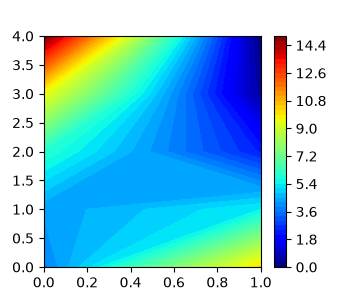

Note
Go to the end to download the full example code.
TRAM on a 1D double well¶
This example shows how to use the transition-based reweighting analysis method (TRAM) to estimate the free energies and Markov model of a simple double-well potential, sampled using umbrella sampling.
For more information see the TRAM estimator and
its respective TRAM tutorial.

0%| | 0/1000 [00:00<?, ?it/s]
Initializing free energies using MBAR: 0%| | 0/1000 [00:00<?, ?it/s]
Initializing free energies using MBAR - [inc: 4.1e-01]: 0%| | 1/1000 [00:00<00:03, 258.40it/s]
Initializing free energies using MBAR - [inc: 2.1e-01]: 0%| | 2/1000 [00:00<00:03, 279.79it/s]
Initializing free energies using MBAR - [inc: 1.5e-01]: 0%| | 3/1000 [00:00<00:03, 288.85it/s]
Initializing free energies using MBAR - [inc: 1.1e-01]: 0%| | 4/1000 [00:00<00:03, 293.93it/s]
Initializing free energies using MBAR - [inc: 7.9e-02]: 0%| | 5/1000 [00:00<00:03, 297.03it/s]
Initializing free energies using MBAR - [inc: 5.4e-02]: 1%| | 6/1000 [00:00<00:03, 299.24it/s]
Initializing free energies using MBAR - [inc: 3.8e-02]: 1%| | 7/1000 [00:00<00:03, 300.77it/s]
Initializing free energies using MBAR - [inc: 2.6e-02]: 1%| | 8/1000 [00:00<00:03, 301.99it/s]
Initializing free energies using MBAR - [inc: 1.8e-02]: 1%| | 9/1000 [00:00<00:03, 302.98it/s]
Initializing free energies using MBAR - [inc: 1.3e-02]: 1%| | 10/1000 [00:00<00:03, 303.75it/s]
Initializing free energies using MBAR - [inc: 8.7e-03]: 1%| | 11/1000 [00:00<00:03, 304.36it/s]
Initializing free energies using MBAR - [inc: 6.1e-03]: 1%| | 12/1000 [00:00<00:03, 304.88it/s]
Initializing free energies using MBAR - [inc: 4.2e-03]: 1%|▏ | 13/1000 [00:00<00:03, 305.24it/s]
Initializing free energies using MBAR - [inc: 2.9e-03]: 1%|▏ | 14/1000 [00:00<00:03, 305.55it/s]
Initializing free energies using MBAR - [inc: 2.0e-03]: 2%|▏ | 15/1000 [00:00<00:03, 305.89it/s]
Initializing free energies using MBAR - [inc: 1.4e-03]: 2%|▏ | 16/1000 [00:00<00:03, 306.15it/s]
Initializing free energies using MBAR - [inc: 9.9e-04]: 2%|▏ | 17/1000 [00:00<00:03, 306.44it/s]
Initializing free energies using MBAR - [inc: 6.9e-04]: 2%|▏ | 18/1000 [00:00<00:03, 306.65it/s]
Initializing free energies using MBAR - [inc: 4.8e-04]: 2%|▏ | 19/1000 [00:00<00:03, 306.87it/s]
Initializing free energies using MBAR - [inc: 3.3e-04]: 2%|▏ | 20/1000 [00:00<00:03, 307.06it/s]
Initializing free energies using MBAR - [inc: 2.3e-04]: 2%|▏ | 21/1000 [00:00<00:03, 307.26it/s]
Initializing free energies using MBAR - [inc: 1.6e-04]: 2%|▏ | 22/1000 [00:00<00:03, 307.43it/s]
Initializing free energies using MBAR - [inc: 1.1e-04]: 2%|▏ | 23/1000 [00:00<00:03, 307.55it/s]
Initializing free energies using MBAR - [inc: 7.7e-05]: 2%|▏ | 24/1000 [00:00<00:03, 307.67it/s]
Initializing free energies using MBAR - [inc: 5.4e-05]: 2%|▎ | 25/1000 [00:00<00:03, 307.81it/s]
Initializing free energies using MBAR - [inc: 3.7e-05]: 3%|▎ | 26/1000 [00:00<00:03, 307.94it/s]
Initializing free energies using MBAR - [inc: 2.6e-05]: 3%|▎ | 27/1000 [00:00<00:03, 308.06it/s]
Initializing free energies using MBAR - [inc: 1.8e-05]: 3%|▎ | 28/1000 [00:00<00:03, 308.16it/s]
Initializing free energies using MBAR - [inc: 1.3e-05]: 3%|▎ | 29/1000 [00:00<00:03, 308.25it/s]
Initializing free energies using MBAR - [inc: 8.7e-06]: 3%|▎ | 30/1000 [00:00<00:03, 308.35it/s]
Initializing free energies using MBAR - [inc: 8.7e-06]: 3%|▎ | 31/1000 [00:00<00:03, 308.45it/s]
Initializing free energies using MBAR - [inc: 6.1e-06]: 3%|▎ | 31/1000 [00:00<00:03, 308.45it/s]
Initializing free energies using MBAR - [inc: 4.2e-06]: 3%|▎ | 32/1000 [00:00<00:03, 308.45it/s]
Initializing free energies using MBAR - [inc: 2.9e-06]: 3%|▎ | 33/1000 [00:00<00:03, 308.45it/s]
Initializing free energies using MBAR - [inc: 2.0e-06]: 3%|▎ | 34/1000 [00:00<00:03, 308.45it/s]
Initializing free energies using MBAR - [inc: 1.4e-06]: 4%|▎ | 35/1000 [00:00<00:03, 308.45it/s]
Initializing free energies using MBAR - [inc: 9.8e-07]: 4%|▎ | 36/1000 [00:00<00:03, 308.45it/s]
Initializing free energies using MBAR - [inc: 6.8e-07]: 4%|▎ | 37/1000 [00:00<00:03, 308.45it/s]
Initializing free energies using MBAR - [inc: 4.8e-07]: 4%|▍ | 38/1000 [00:00<00:03, 308.45it/s]
Initializing free energies using MBAR - [inc: 3.3e-07]: 4%|▍ | 39/1000 [00:00<00:03, 308.45it/s]
Initializing free energies using MBAR - [inc: 2.3e-07]: 4%|▍ | 40/1000 [00:00<00:03, 308.45it/s]
Initializing free energies using MBAR - [inc: 1.6e-07]: 4%|▍ | 41/1000 [00:00<00:03, 308.45it/s]
Initializing free energies using MBAR - [inc: 1.1e-07]: 4%|▍ | 42/1000 [00:00<00:03, 308.45it/s]
Initializing free energies using MBAR - [inc: 7.7e-08]: 4%|▍ | 43/1000 [00:00<00:03, 308.45it/s]
Initializing free energies using MBAR - [inc: 5.4e-08]: 4%|▍ | 44/1000 [00:00<00:03, 308.45it/s]
Initializing free energies using MBAR - [inc: 3.7e-08]: 4%|▍ | 45/1000 [00:00<00:03, 308.45it/s]
Initializing free energies using MBAR - [inc: 2.6e-08]: 5%|▍ | 46/1000 [00:00<00:03, 308.45it/s]
Initializing free energies using MBAR - [inc: 1.8e-08]: 5%|▍ | 47/1000 [00:00<00:03, 308.45it/s]
Initializing free energies using MBAR - [inc: 1.3e-08]: 5%|▍ | 48/1000 [00:00<00:03, 308.45it/s]
Initializing free energies using MBAR - [inc: 8.7e-09]: 5%|▍ | 49/1000 [00:00<00:03, 308.45it/s]
Initializing free energies using MBAR - [inc: 8.7e-09]: 100%|██████████| 49/49 [00:00<00:00, 309.01it/s]
0%| | 0/1000 [00:00<?, ?it/s]
Running TRAM estimate: 0%| | 0/1000 [00:00<?, ?it/s]
Running TRAM estimate - [inc: 1.0e+00]: 0%| | 1/1000 [00:00<00:03, 296.31it/s]
Running TRAM estimate - [inc: 7.0e-01]: 0%| | 2/1000 [00:00<00:03, 296.09it/s]
Running TRAM estimate - [inc: 4.7e-01]: 0%| | 3/1000 [00:00<00:03, 296.14it/s]
Running TRAM estimate - [inc: 3.3e-01]: 0%| | 4/1000 [00:00<00:03, 296.35it/s]
Running TRAM estimate - [inc: 2.3e-01]: 0%| | 5/1000 [00:00<00:03, 296.71it/s]
Running TRAM estimate - [inc: 1.7e-01]: 1%| | 6/1000 [00:00<00:03, 297.18it/s]
Running TRAM estimate - [inc: 1.3e-01]: 1%| | 7/1000 [00:00<00:03, 297.42it/s]
Running TRAM estimate - [inc: 1.1e-01]: 1%| | 8/1000 [00:00<00:03, 297.66it/s]
Running TRAM estimate - [inc: 8.4e-02]: 1%| | 9/1000 [00:00<00:03, 297.93it/s]
Running TRAM estimate - [inc: 6.7e-02]: 1%| | 10/1000 [00:00<00:03, 298.16it/s]
Running TRAM estimate - [inc: 5.4e-02]: 1%| | 11/1000 [00:00<00:03, 298.31it/s]
Running TRAM estimate - [inc: 4.3e-02]: 1%| | 12/1000 [00:00<00:03, 298.43it/s]
Running TRAM estimate - [inc: 3.4e-02]: 1%|▏ | 13/1000 [00:00<00:03, 298.55it/s]
Running TRAM estimate - [inc: 2.7e-02]: 1%|▏ | 14/1000 [00:00<00:03, 298.64it/s]
Running TRAM estimate - [inc: 2.2e-02]: 2%|▏ | 15/1000 [00:00<00:03, 298.75it/s]
Running TRAM estimate - [inc: 1.7e-02]: 2%|▏ | 16/1000 [00:00<00:03, 298.83it/s]
Running TRAM estimate - [inc: 1.3e-02]: 2%|▏ | 17/1000 [00:00<00:03, 298.92it/s]
Running TRAM estimate - [inc: 1.0e-02]: 2%|▏ | 18/1000 [00:00<00:03, 298.99it/s]
Running TRAM estimate - [inc: 8.7e-03]: 2%|▏ | 19/1000 [00:00<00:03, 299.08it/s]
Running TRAM estimate - [inc: 7.7e-03]: 2%|▏ | 20/1000 [00:00<00:03, 299.15it/s]
Running TRAM estimate - [inc: 6.9e-03]: 2%|▏ | 21/1000 [00:00<00:03, 299.20it/s]
Running TRAM estimate - [inc: 6.4e-03]: 2%|▏ | 22/1000 [00:00<00:03, 299.13it/s]
Running TRAM estimate - [inc: 5.9e-03]: 2%|▏ | 23/1000 [00:00<00:03, 299.19it/s]
Running TRAM estimate - [inc: 5.6e-03]: 2%|▏ | 24/1000 [00:00<00:03, 299.25it/s]
Running TRAM estimate - [inc: 5.3e-03]: 2%|▎ | 25/1000 [00:00<00:03, 299.29it/s]
Running TRAM estimate - [inc: 5.1e-03]: 3%|▎ | 26/1000 [00:00<00:03, 299.32it/s]
Running TRAM estimate - [inc: 5.0e-03]: 3%|▎ | 27/1000 [00:00<00:03, 299.33it/s]
Running TRAM estimate - [inc: 4.8e-03]: 3%|▎ | 28/1000 [00:00<00:03, 299.37it/s]
Running TRAM estimate - [inc: 4.7e-03]: 3%|▎ | 29/1000 [00:00<00:03, 299.40it/s]
Running TRAM estimate - [inc: 4.7e-03]: 3%|▎ | 30/1000 [00:00<00:03, 299.41it/s]
Running TRAM estimate - [inc: 4.7e-03]: 3%|▎ | 30/1000 [00:00<00:03, 299.41it/s]
Running TRAM estimate - [inc: 4.6e-03]: 3%|▎ | 31/1000 [00:00<00:03, 299.41it/s]
Running TRAM estimate - [inc: 4.6e-03]: 3%|▎ | 32/1000 [00:00<00:03, 299.41it/s]
Running TRAM estimate - [inc: 4.5e-03]: 3%|▎ | 33/1000 [00:00<00:03, 299.41it/s]
Running TRAM estimate - [inc: 4.5e-03]: 3%|▎ | 34/1000 [00:00<00:03, 299.41it/s]
Running TRAM estimate - [inc: 4.5e-03]: 4%|▎ | 35/1000 [00:00<00:03, 299.41it/s]
Running TRAM estimate - [inc: 4.5e-03]: 4%|▎ | 36/1000 [00:00<00:03, 299.41it/s]
Running TRAM estimate - [inc: 4.5e-03]: 4%|▎ | 37/1000 [00:00<00:03, 299.41it/s]
Running TRAM estimate - [inc: 4.4e-03]: 4%|▍ | 38/1000 [00:00<00:03, 299.41it/s]
Running TRAM estimate - [inc: 4.4e-03]: 4%|▍ | 39/1000 [00:00<00:03, 299.41it/s]
Running TRAM estimate - [inc: 4.4e-03]: 4%|▍ | 40/1000 [00:00<00:03, 299.41it/s]
Running TRAM estimate - [inc: 4.4e-03]: 4%|▍ | 41/1000 [00:00<00:03, 299.41it/s]
Running TRAM estimate - [inc: 4.4e-03]: 4%|▍ | 42/1000 [00:00<00:03, 299.41it/s]
Running TRAM estimate - [inc: 4.4e-03]: 4%|▍ | 43/1000 [00:00<00:03, 299.41it/s]
Running TRAM estimate - [inc: 4.4e-03]: 4%|▍ | 44/1000 [00:00<00:03, 299.41it/s]
Running TRAM estimate - [inc: 4.4e-03]: 4%|▍ | 45/1000 [00:00<00:03, 299.41it/s]
Running TRAM estimate - [inc: 4.4e-03]: 5%|▍ | 46/1000 [00:00<00:03, 299.41it/s]
Running TRAM estimate - [inc: 4.4e-03]: 5%|▍ | 47/1000 [00:00<00:03, 299.41it/s]
Running TRAM estimate - [inc: 4.4e-03]: 5%|▍ | 48/1000 [00:00<00:03, 299.41it/s]
Running TRAM estimate - [inc: 4.4e-03]: 5%|▍ | 49/1000 [00:00<00:03, 299.41it/s]
Running TRAM estimate - [inc: 4.4e-03]: 5%|▌ | 50/1000 [00:00<00:03, 299.41it/s]
Running TRAM estimate - [inc: 4.3e-03]: 5%|▌ | 51/1000 [00:00<00:03, 299.41it/s]
Running TRAM estimate - [inc: 4.3e-03]: 5%|▌ | 52/1000 [00:00<00:03, 299.41it/s]
Running TRAM estimate - [inc: 4.3e-03]: 5%|▌ | 53/1000 [00:00<00:03, 299.41it/s]
Running TRAM estimate - [inc: 4.3e-03]: 5%|▌ | 54/1000 [00:00<00:03, 299.41it/s]
Running TRAM estimate - [inc: 4.3e-03]: 6%|▌ | 55/1000 [00:00<00:03, 299.41it/s]
Running TRAM estimate - [inc: 4.3e-03]: 6%|▌ | 56/1000 [00:00<00:03, 299.41it/s]
Running TRAM estimate - [inc: 4.3e-03]: 6%|▌ | 57/1000 [00:00<00:03, 299.41it/s]
Running TRAM estimate - [inc: 4.3e-03]: 6%|▌ | 58/1000 [00:00<00:03, 299.41it/s]
Running TRAM estimate - [inc: 4.3e-03]: 6%|▌ | 59/1000 [00:00<00:03, 299.41it/s]
Running TRAM estimate - [inc: 4.3e-03]: 6%|▌ | 60/1000 [00:00<00:03, 299.41it/s]
Running TRAM estimate - [inc: 4.3e-03]: 6%|▌ | 61/1000 [00:00<00:03, 299.80it/s]
Running TRAM estimate - [inc: 4.3e-03]: 6%|▌ | 61/1000 [00:00<00:03, 299.80it/s]
Running TRAM estimate - [inc: 4.3e-03]: 6%|▌ | 62/1000 [00:00<00:03, 299.80it/s]
Running TRAM estimate - [inc: 4.3e-03]: 6%|▋ | 63/1000 [00:00<00:03, 299.80it/s]
Running TRAM estimate - [inc: 4.3e-03]: 6%|▋ | 64/1000 [00:00<00:03, 299.80it/s]
Running TRAM estimate - [inc: 4.3e-03]: 6%|▋ | 65/1000 [00:00<00:03, 299.80it/s]
Running TRAM estimate - [inc: 4.3e-03]: 7%|▋ | 66/1000 [00:00<00:03, 299.80it/s]
Running TRAM estimate - [inc: 4.3e-03]: 7%|▋ | 67/1000 [00:00<00:03, 299.80it/s]
Running TRAM estimate - [inc: 4.2e-03]: 7%|▋ | 68/1000 [00:00<00:03, 299.80it/s]
Running TRAM estimate - [inc: 4.2e-03]: 7%|▋ | 69/1000 [00:00<00:03, 299.80it/s]
Running TRAM estimate - [inc: 4.2e-03]: 7%|▋ | 70/1000 [00:00<00:03, 299.80it/s]
Running TRAM estimate - [inc: 4.2e-03]: 7%|▋ | 71/1000 [00:00<00:03, 299.80it/s]
Running TRAM estimate - [inc: 4.2e-03]: 7%|▋ | 72/1000 [00:00<00:03, 299.80it/s]
Running TRAM estimate - [inc: 4.2e-03]: 7%|▋ | 73/1000 [00:00<00:03, 299.80it/s]
Running TRAM estimate - [inc: 4.2e-03]: 7%|▋ | 74/1000 [00:00<00:03, 299.80it/s]
Running TRAM estimate - [inc: 4.2e-03]: 8%|▊ | 75/1000 [00:00<00:03, 299.80it/s]
Running TRAM estimate - [inc: 4.2e-03]: 8%|▊ | 76/1000 [00:00<00:03, 299.80it/s]
Running TRAM estimate - [inc: 4.2e-03]: 8%|▊ | 77/1000 [00:00<00:03, 299.80it/s]
Running TRAM estimate - [inc: 4.2e-03]: 8%|▊ | 78/1000 [00:00<00:03, 299.80it/s]
Running TRAM estimate - [inc: 4.2e-03]: 8%|▊ | 79/1000 [00:00<00:03, 299.80it/s]
Running TRAM estimate - [inc: 4.2e-03]: 8%|▊ | 80/1000 [00:00<00:03, 299.80it/s]
Running TRAM estimate - [inc: 4.2e-03]: 8%|▊ | 81/1000 [00:00<00:03, 299.80it/s]
Running TRAM estimate - [inc: 4.2e-03]: 8%|▊ | 82/1000 [00:00<00:03, 299.80it/s]
Running TRAM estimate - [inc: 4.2e-03]: 8%|▊ | 83/1000 [00:00<00:03, 299.80it/s]
Running TRAM estimate - [inc: 4.1e-03]: 8%|▊ | 84/1000 [00:00<00:03, 299.80it/s]
Running TRAM estimate - [inc: 4.1e-03]: 8%|▊ | 85/1000 [00:00<00:03, 299.80it/s]
Running TRAM estimate - [inc: 4.1e-03]: 9%|▊ | 86/1000 [00:00<00:03, 299.80it/s]
Running TRAM estimate - [inc: 4.1e-03]: 9%|▊ | 87/1000 [00:00<00:03, 299.80it/s]
Running TRAM estimate - [inc: 4.1e-03]: 9%|▉ | 88/1000 [00:00<00:03, 299.80it/s]
Running TRAM estimate - [inc: 4.1e-03]: 9%|▉ | 89/1000 [00:00<00:03, 299.80it/s]
Running TRAM estimate - [inc: 4.1e-03]: 9%|▉ | 90/1000 [00:00<00:03, 299.80it/s]
Running TRAM estimate - [inc: 4.1e-03]: 9%|▉ | 91/1000 [00:00<00:03, 299.80it/s]
Running TRAM estimate - [inc: 4.1e-03]: 9%|▉ | 92/1000 [00:00<00:03, 300.02it/s]
Running TRAM estimate - [inc: 4.1e-03]: 9%|▉ | 92/1000 [00:00<00:03, 300.02it/s]
Running TRAM estimate - [inc: 4.1e-03]: 9%|▉ | 93/1000 [00:00<00:03, 300.02it/s]
Running TRAM estimate - [inc: 4.1e-03]: 9%|▉ | 94/1000 [00:00<00:03, 300.02it/s]
Running TRAM estimate - [inc: 4.1e-03]: 10%|▉ | 95/1000 [00:00<00:03, 300.02it/s]
Running TRAM estimate - [inc: 4.1e-03]: 10%|▉ | 96/1000 [00:00<00:03, 300.02it/s]
Running TRAM estimate - [inc: 4.1e-03]: 10%|▉ | 97/1000 [00:00<00:03, 300.02it/s]
Running TRAM estimate - [inc: 4.1e-03]: 10%|▉ | 98/1000 [00:00<00:03, 300.02it/s]
Running TRAM estimate - [inc: 4.1e-03]: 10%|▉ | 99/1000 [00:00<00:03, 300.02it/s]
Running TRAM estimate - [inc: 4.0e-03]: 10%|█ | 100/1000 [00:00<00:02, 300.02it/s]
Running TRAM estimate - [inc: 4.0e-03]: 10%|█ | 101/1000 [00:00<00:02, 300.02it/s]
Running TRAM estimate - [inc: 4.0e-03]: 10%|█ | 102/1000 [00:00<00:02, 300.02it/s]
Running TRAM estimate - [inc: 4.0e-03]: 10%|█ | 103/1000 [00:00<00:02, 300.02it/s]
Running TRAM estimate - [inc: 4.0e-03]: 10%|█ | 104/1000 [00:00<00:02, 300.02it/s]
Running TRAM estimate - [inc: 4.0e-03]: 10%|█ | 105/1000 [00:00<00:02, 300.02it/s]
Running TRAM estimate - [inc: 4.0e-03]: 11%|█ | 106/1000 [00:00<00:02, 300.02it/s]
Running TRAM estimate - [inc: 4.0e-03]: 11%|█ | 107/1000 [00:00<00:02, 300.02it/s]
Running TRAM estimate - [inc: 4.0e-03]: 11%|█ | 108/1000 [00:00<00:02, 300.02it/s]
Running TRAM estimate - [inc: 4.0e-03]: 11%|█ | 109/1000 [00:00<00:02, 300.02it/s]
Running TRAM estimate - [inc: 4.0e-03]: 11%|█ | 110/1000 [00:00<00:02, 300.02it/s]
Running TRAM estimate - [inc: 4.0e-03]: 11%|█ | 111/1000 [00:00<00:02, 300.02it/s]
Running TRAM estimate - [inc: 4.0e-03]: 11%|█ | 112/1000 [00:00<00:02, 300.02it/s]
Running TRAM estimate - [inc: 4.0e-03]: 11%|█▏ | 113/1000 [00:00<00:02, 300.02it/s]
Running TRAM estimate - [inc: 4.0e-03]: 11%|█▏ | 114/1000 [00:00<00:02, 300.02it/s]
Running TRAM estimate - [inc: 4.0e-03]: 12%|█▏ | 115/1000 [00:00<00:02, 300.02it/s]
Running TRAM estimate - [inc: 3.9e-03]: 12%|█▏ | 116/1000 [00:00<00:02, 300.02it/s]
Running TRAM estimate - [inc: 3.9e-03]: 12%|█▏ | 117/1000 [00:00<00:02, 300.02it/s]
Running TRAM estimate - [inc: 3.9e-03]: 12%|█▏ | 118/1000 [00:00<00:02, 300.02it/s]
Running TRAM estimate - [inc: 3.9e-03]: 12%|█▏ | 119/1000 [00:00<00:02, 300.02it/s]
Running TRAM estimate - [inc: 3.9e-03]: 12%|█▏ | 120/1000 [00:00<00:02, 300.02it/s]
Running TRAM estimate - [inc: 3.9e-03]: 12%|█▏ | 121/1000 [00:00<00:02, 300.02it/s]
Running TRAM estimate - [inc: 3.9e-03]: 12%|█▏ | 122/1000 [00:00<00:02, 300.02it/s]
Running TRAM estimate - [inc: 3.9e-03]: 12%|█▏ | 123/1000 [00:00<00:02, 295.39it/s]
Running TRAM estimate - [inc: 3.9e-03]: 12%|█▏ | 123/1000 [00:00<00:02, 295.39it/s]
Running TRAM estimate - [inc: 3.9e-03]: 12%|█▏ | 124/1000 [00:00<00:02, 295.39it/s]
Running TRAM estimate - [inc: 3.9e-03]: 12%|█▎ | 125/1000 [00:00<00:02, 295.39it/s]
Running TRAM estimate - [inc: 3.9e-03]: 13%|█▎ | 126/1000 [00:00<00:02, 295.39it/s]
Running TRAM estimate - [inc: 3.9e-03]: 13%|█▎ | 127/1000 [00:00<00:02, 295.39it/s]
Running TRAM estimate - [inc: 3.9e-03]: 13%|█▎ | 128/1000 [00:00<00:02, 295.39it/s]
Running TRAM estimate - [inc: 3.9e-03]: 13%|█▎ | 129/1000 [00:00<00:02, 295.39it/s]
Running TRAM estimate - [inc: 3.9e-03]: 13%|█▎ | 130/1000 [00:00<00:02, 295.39it/s]
Running TRAM estimate - [inc: 3.9e-03]: 13%|█▎ | 131/1000 [00:00<00:02, 295.39it/s]
Running TRAM estimate - [inc: 3.8e-03]: 13%|█▎ | 132/1000 [00:00<00:02, 295.39it/s]
Running TRAM estimate - [inc: 3.8e-03]: 13%|█▎ | 133/1000 [00:00<00:02, 295.39it/s]
Running TRAM estimate - [inc: 3.8e-03]: 13%|█▎ | 134/1000 [00:00<00:02, 295.39it/s]
Running TRAM estimate - [inc: 3.8e-03]: 14%|█▎ | 135/1000 [00:00<00:02, 295.39it/s]
Running TRAM estimate - [inc: 3.8e-03]: 14%|█▎ | 136/1000 [00:00<00:02, 295.39it/s]
Running TRAM estimate - [inc: 3.8e-03]: 14%|█▎ | 137/1000 [00:00<00:02, 295.39it/s]
Running TRAM estimate - [inc: 3.8e-03]: 14%|█▍ | 138/1000 [00:00<00:02, 295.39it/s]
Running TRAM estimate - [inc: 3.8e-03]: 14%|█▍ | 139/1000 [00:00<00:02, 295.39it/s]
Running TRAM estimate - [inc: 3.8e-03]: 14%|█▍ | 140/1000 [00:00<00:02, 295.39it/s]
Running TRAM estimate - [inc: 3.8e-03]: 14%|█▍ | 141/1000 [00:00<00:02, 295.39it/s]
Running TRAM estimate - [inc: 3.8e-03]: 14%|█▍ | 142/1000 [00:00<00:02, 295.39it/s]
Running TRAM estimate - [inc: 3.8e-03]: 14%|█▍ | 143/1000 [00:00<00:02, 295.39it/s]
Running TRAM estimate - [inc: 3.8e-03]: 14%|█▍ | 144/1000 [00:00<00:02, 295.39it/s]
Running TRAM estimate - [inc: 3.8e-03]: 14%|█▍ | 145/1000 [00:00<00:02, 295.39it/s]
Running TRAM estimate - [inc: 3.8e-03]: 15%|█▍ | 146/1000 [00:00<00:02, 295.39it/s]
Running TRAM estimate - [inc: 3.8e-03]: 15%|█▍ | 147/1000 [00:00<00:02, 295.39it/s]
Running TRAM estimate - [inc: 3.7e-03]: 15%|█▍ | 148/1000 [00:00<00:02, 295.39it/s]
Running TRAM estimate - [inc: 3.7e-03]: 15%|█▍ | 149/1000 [00:00<00:02, 295.39it/s]
Running TRAM estimate - [inc: 3.7e-03]: 15%|█▌ | 150/1000 [00:00<00:02, 295.39it/s]
Running TRAM estimate - [inc: 3.7e-03]: 15%|█▌ | 151/1000 [00:00<00:02, 295.39it/s]
Running TRAM estimate - [inc: 3.7e-03]: 15%|█▌ | 152/1000 [00:00<00:02, 295.39it/s]
Running TRAM estimate - [inc: 3.7e-03]: 15%|█▌ | 153/1000 [00:00<00:02, 295.61it/s]
Running TRAM estimate - [inc: 3.7e-03]: 15%|█▌ | 153/1000 [00:00<00:02, 295.61it/s]
Running TRAM estimate - [inc: 3.7e-03]: 15%|█▌ | 154/1000 [00:00<00:02, 295.61it/s]
Running TRAM estimate - [inc: 3.7e-03]: 16%|█▌ | 155/1000 [00:00<00:02, 295.61it/s]
Running TRAM estimate - [inc: 3.7e-03]: 16%|█▌ | 156/1000 [00:00<00:02, 295.61it/s]
Running TRAM estimate - [inc: 3.7e-03]: 16%|█▌ | 157/1000 [00:00<00:02, 295.61it/s]
Running TRAM estimate - [inc: 3.7e-03]: 16%|█▌ | 158/1000 [00:00<00:02, 295.61it/s]
Running TRAM estimate - [inc: 3.7e-03]: 16%|█▌ | 159/1000 [00:00<00:02, 295.61it/s]
Running TRAM estimate - [inc: 3.7e-03]: 16%|█▌ | 160/1000 [00:00<00:02, 295.61it/s]
Running TRAM estimate - [inc: 3.7e-03]: 16%|█▌ | 161/1000 [00:00<00:02, 295.61it/s]
Running TRAM estimate - [inc: 3.7e-03]: 16%|█▌ | 162/1000 [00:00<00:02, 295.61it/s]
Running TRAM estimate - [inc: 3.7e-03]: 16%|█▋ | 163/1000 [00:00<00:02, 295.61it/s]
Running TRAM estimate - [inc: 3.6e-03]: 16%|█▋ | 164/1000 [00:00<00:02, 295.61it/s]
Running TRAM estimate - [inc: 3.6e-03]: 16%|█▋ | 165/1000 [00:00<00:02, 295.61it/s]
Running TRAM estimate - [inc: 3.6e-03]: 17%|█▋ | 166/1000 [00:00<00:02, 295.61it/s]
Running TRAM estimate - [inc: 3.6e-03]: 17%|█▋ | 167/1000 [00:00<00:02, 295.61it/s]
Running TRAM estimate - [inc: 3.6e-03]: 17%|█▋ | 168/1000 [00:00<00:02, 295.61it/s]
Running TRAM estimate - [inc: 3.6e-03]: 17%|█▋ | 169/1000 [00:00<00:02, 295.61it/s]
Running TRAM estimate - [inc: 3.6e-03]: 17%|█▋ | 170/1000 [00:00<00:02, 295.61it/s]
Running TRAM estimate - [inc: 3.6e-03]: 17%|█▋ | 171/1000 [00:00<00:02, 295.61it/s]
Running TRAM estimate - [inc: 3.6e-03]: 17%|█▋ | 172/1000 [00:00<00:02, 295.61it/s]
Running TRAM estimate - [inc: 3.6e-03]: 17%|█▋ | 173/1000 [00:00<00:02, 295.61it/s]
Running TRAM estimate - [inc: 3.6e-03]: 17%|█▋ | 174/1000 [00:00<00:02, 295.61it/s]
Running TRAM estimate - [inc: 3.6e-03]: 18%|█▊ | 175/1000 [00:00<00:02, 295.61it/s]
Running TRAM estimate - [inc: 3.6e-03]: 18%|█▊ | 176/1000 [00:00<00:02, 295.61it/s]
Running TRAM estimate - [inc: 3.6e-03]: 18%|█▊ | 177/1000 [00:00<00:02, 295.61it/s]
Running TRAM estimate - [inc: 3.6e-03]: 18%|█▊ | 178/1000 [00:00<00:02, 295.61it/s]
Running TRAM estimate - [inc: 3.6e-03]: 18%|█▊ | 179/1000 [00:00<00:02, 295.61it/s]
Running TRAM estimate - [inc: 3.6e-03]: 18%|█▊ | 180/1000 [00:00<00:02, 295.61it/s]
Running TRAM estimate - [inc: 3.5e-03]: 18%|█▊ | 181/1000 [00:00<00:02, 295.61it/s]
Running TRAM estimate - [inc: 3.5e-03]: 18%|█▊ | 182/1000 [00:00<00:02, 295.61it/s]
Running TRAM estimate - [inc: 3.5e-03]: 18%|█▊ | 183/1000 [00:00<00:02, 296.99it/s]
Running TRAM estimate - [inc: 3.5e-03]: 18%|█▊ | 183/1000 [00:00<00:02, 296.99it/s]
Running TRAM estimate - [inc: 3.5e-03]: 18%|█▊ | 184/1000 [00:00<00:02, 296.99it/s]
Running TRAM estimate - [inc: 3.5e-03]: 18%|█▊ | 185/1000 [00:00<00:02, 296.99it/s]
Running TRAM estimate - [inc: 3.5e-03]: 19%|█▊ | 186/1000 [00:00<00:02, 296.99it/s]
Running TRAM estimate - [inc: 3.5e-03]: 19%|█▊ | 187/1000 [00:00<00:02, 296.99it/s]
Running TRAM estimate - [inc: 3.5e-03]: 19%|█▉ | 188/1000 [00:00<00:02, 296.99it/s]
Running TRAM estimate - [inc: 3.5e-03]: 19%|█▉ | 189/1000 [00:00<00:02, 296.99it/s]
Running TRAM estimate - [inc: 3.5e-03]: 19%|█▉ | 190/1000 [00:00<00:02, 296.99it/s]
Running TRAM estimate - [inc: 3.5e-03]: 19%|█▉ | 191/1000 [00:00<00:02, 296.99it/s]
Running TRAM estimate - [inc: 3.5e-03]: 19%|█▉ | 192/1000 [00:00<00:02, 296.99it/s]
Running TRAM estimate - [inc: 3.5e-03]: 19%|█▉ | 193/1000 [00:00<00:02, 296.99it/s]
Running TRAM estimate - [inc: 3.5e-03]: 19%|█▉ | 194/1000 [00:00<00:02, 296.99it/s]
Running TRAM estimate - [inc: 3.5e-03]: 20%|█▉ | 195/1000 [00:00<00:02, 296.99it/s]
Running TRAM estimate - [inc: 3.5e-03]: 20%|█▉ | 196/1000 [00:00<00:02, 296.99it/s]
Running TRAM estimate - [inc: 3.5e-03]: 20%|█▉ | 197/1000 [00:00<00:02, 296.99it/s]
Running TRAM estimate - [inc: 3.4e-03]: 20%|█▉ | 198/1000 [00:00<00:02, 296.99it/s]
Running TRAM estimate - [inc: 3.4e-03]: 20%|█▉ | 199/1000 [00:00<00:02, 296.99it/s]
Running TRAM estimate - [inc: 3.4e-03]: 20%|██ | 200/1000 [00:00<00:02, 296.99it/s]
Running TRAM estimate - [inc: 3.4e-03]: 20%|██ | 201/1000 [00:00<00:02, 296.99it/s]
Running TRAM estimate - [inc: 3.4e-03]: 20%|██ | 202/1000 [00:00<00:02, 296.99it/s]
Running TRAM estimate - [inc: 3.4e-03]: 20%|██ | 203/1000 [00:00<00:02, 296.99it/s]
Running TRAM estimate - [inc: 3.4e-03]: 20%|██ | 204/1000 [00:00<00:02, 296.99it/s]
Running TRAM estimate - [inc: 3.4e-03]: 20%|██ | 205/1000 [00:00<00:02, 296.99it/s]
Running TRAM estimate - [inc: 3.4e-03]: 21%|██ | 206/1000 [00:00<00:02, 296.99it/s]
Running TRAM estimate - [inc: 3.4e-03]: 21%|██ | 207/1000 [00:00<00:02, 296.99it/s]
Running TRAM estimate - [inc: 3.4e-03]: 21%|██ | 208/1000 [00:00<00:02, 296.99it/s]
Running TRAM estimate - [inc: 3.4e-03]: 21%|██ | 209/1000 [00:00<00:02, 296.99it/s]
Running TRAM estimate - [inc: 3.4e-03]: 21%|██ | 210/1000 [00:00<00:02, 296.99it/s]
Running TRAM estimate - [inc: 3.4e-03]: 21%|██ | 211/1000 [00:00<00:02, 296.99it/s]
Running TRAM estimate - [inc: 3.4e-03]: 21%|██ | 212/1000 [00:00<00:02, 296.99it/s]
Running TRAM estimate - [inc: 3.4e-03]: 21%|██▏ | 213/1000 [00:00<00:02, 297.84it/s]
Running TRAM estimate - [inc: 3.4e-03]: 21%|██▏ | 213/1000 [00:00<00:02, 297.84it/s]
Running TRAM estimate - [inc: 3.4e-03]: 21%|██▏ | 214/1000 [00:00<00:02, 297.84it/s]
Running TRAM estimate - [inc: 3.4e-03]: 22%|██▏ | 215/1000 [00:00<00:02, 297.84it/s]
Running TRAM estimate - [inc: 3.3e-03]: 22%|██▏ | 216/1000 [00:00<00:02, 297.84it/s]
Running TRAM estimate - [inc: 3.3e-03]: 22%|██▏ | 217/1000 [00:00<00:02, 297.84it/s]
Running TRAM estimate - [inc: 3.3e-03]: 22%|██▏ | 218/1000 [00:00<00:02, 297.84it/s]
Running TRAM estimate - [inc: 3.3e-03]: 22%|██▏ | 219/1000 [00:00<00:02, 297.84it/s]
Running TRAM estimate - [inc: 3.3e-03]: 22%|██▏ | 220/1000 [00:00<00:02, 297.84it/s]
Running TRAM estimate - [inc: 3.3e-03]: 22%|██▏ | 221/1000 [00:00<00:02, 297.84it/s]
Running TRAM estimate - [inc: 3.3e-03]: 22%|██▏ | 222/1000 [00:00<00:02, 297.84it/s]
Running TRAM estimate - [inc: 3.3e-03]: 22%|██▏ | 223/1000 [00:00<00:02, 297.84it/s]
Running TRAM estimate - [inc: 3.3e-03]: 22%|██▏ | 224/1000 [00:00<00:02, 297.84it/s]
Running TRAM estimate - [inc: 3.3e-03]: 22%|██▎ | 225/1000 [00:00<00:02, 297.84it/s]
Running TRAM estimate - [inc: 3.3e-03]: 23%|██▎ | 226/1000 [00:00<00:02, 297.84it/s]
Running TRAM estimate - [inc: 3.3e-03]: 23%|██▎ | 227/1000 [00:00<00:02, 297.84it/s]
Running TRAM estimate - [inc: 3.3e-03]: 23%|██▎ | 228/1000 [00:00<00:02, 297.84it/s]
Running TRAM estimate - [inc: 3.3e-03]: 23%|██▎ | 229/1000 [00:00<00:02, 297.84it/s]
Running TRAM estimate - [inc: 3.3e-03]: 23%|██▎ | 230/1000 [00:00<00:02, 297.84it/s]
Running TRAM estimate - [inc: 3.3e-03]: 23%|██▎ | 231/1000 [00:00<00:02, 297.84it/s]
Running TRAM estimate - [inc: 3.3e-03]: 23%|██▎ | 232/1000 [00:00<00:02, 297.84it/s]
Running TRAM estimate - [inc: 3.3e-03]: 23%|██▎ | 233/1000 [00:00<00:02, 297.84it/s]
Running TRAM estimate - [inc: 3.2e-03]: 23%|██▎ | 234/1000 [00:00<00:02, 297.84it/s]
Running TRAM estimate - [inc: 3.2e-03]: 24%|██▎ | 235/1000 [00:00<00:02, 297.84it/s]
Running TRAM estimate - [inc: 3.2e-03]: 24%|██▎ | 236/1000 [00:00<00:02, 297.84it/s]
Running TRAM estimate - [inc: 3.2e-03]: 24%|██▎ | 237/1000 [00:00<00:02, 297.84it/s]
Running TRAM estimate - [inc: 3.2e-03]: 24%|██▍ | 238/1000 [00:00<00:02, 297.84it/s]
Running TRAM estimate - [inc: 3.2e-03]: 24%|██▍ | 239/1000 [00:00<00:02, 297.84it/s]
Running TRAM estimate - [inc: 3.2e-03]: 24%|██▍ | 240/1000 [00:00<00:02, 297.84it/s]
Running TRAM estimate - [inc: 3.2e-03]: 24%|██▍ | 241/1000 [00:00<00:02, 297.84it/s]
Running TRAM estimate - [inc: 3.2e-03]: 24%|██▍ | 242/1000 [00:00<00:02, 297.84it/s]
Running TRAM estimate - [inc: 3.2e-03]: 24%|██▍ | 243/1000 [00:00<00:02, 298.14it/s]
Running TRAM estimate - [inc: 3.2e-03]: 24%|██▍ | 243/1000 [00:00<00:02, 298.14it/s]
Running TRAM estimate - [inc: 3.2e-03]: 24%|██▍ | 244/1000 [00:00<00:02, 298.14it/s]
Running TRAM estimate - [inc: 3.2e-03]: 24%|██▍ | 245/1000 [00:00<00:02, 298.14it/s]
Running TRAM estimate - [inc: 3.2e-03]: 25%|██▍ | 246/1000 [00:00<00:02, 298.14it/s]
Running TRAM estimate - [inc: 3.2e-03]: 25%|██▍ | 247/1000 [00:00<00:02, 298.14it/s]
Running TRAM estimate - [inc: 3.2e-03]: 25%|██▍ | 248/1000 [00:00<00:02, 298.14it/s]
Running TRAM estimate - [inc: 3.2e-03]: 25%|██▍ | 249/1000 [00:00<00:02, 298.14it/s]
Running TRAM estimate - [inc: 3.2e-03]: 25%|██▌ | 250/1000 [00:00<00:02, 298.14it/s]
Running TRAM estimate - [inc: 3.2e-03]: 25%|██▌ | 251/1000 [00:00<00:02, 298.14it/s]
Running TRAM estimate - [inc: 3.2e-03]: 25%|██▌ | 252/1000 [00:00<00:02, 298.14it/s]
Running TRAM estimate - [inc: 3.1e-03]: 25%|██▌ | 253/1000 [00:00<00:02, 298.14it/s]
Running TRAM estimate - [inc: 3.1e-03]: 25%|██▌ | 254/1000 [00:00<00:02, 298.14it/s]
Running TRAM estimate - [inc: 3.1e-03]: 26%|██▌ | 255/1000 [00:00<00:02, 298.14it/s]
Running TRAM estimate - [inc: 3.1e-03]: 26%|██▌ | 256/1000 [00:00<00:02, 298.14it/s]
Running TRAM estimate - [inc: 3.1e-03]: 26%|██▌ | 257/1000 [00:00<00:02, 298.14it/s]
Running TRAM estimate - [inc: 3.1e-03]: 26%|██▌ | 258/1000 [00:00<00:02, 298.14it/s]
Running TRAM estimate - [inc: 3.1e-03]: 26%|██▌ | 259/1000 [00:00<00:02, 298.14it/s]
Running TRAM estimate - [inc: 3.1e-03]: 26%|██▌ | 260/1000 [00:00<00:02, 298.14it/s]
Running TRAM estimate - [inc: 3.1e-03]: 26%|██▌ | 261/1000 [00:00<00:02, 298.14it/s]
Running TRAM estimate - [inc: 3.1e-03]: 26%|██▌ | 262/1000 [00:00<00:02, 298.14it/s]
Running TRAM estimate - [inc: 3.1e-03]: 26%|██▋ | 263/1000 [00:00<00:02, 298.14it/s]
Running TRAM estimate - [inc: 3.1e-03]: 26%|██▋ | 264/1000 [00:00<00:02, 298.14it/s]
Running TRAM estimate - [inc: 3.1e-03]: 26%|██▋ | 265/1000 [00:00<00:02, 298.14it/s]
Running TRAM estimate - [inc: 3.1e-03]: 27%|██▋ | 266/1000 [00:00<00:02, 298.14it/s]
Running TRAM estimate - [inc: 3.1e-03]: 27%|██▋ | 267/1000 [00:00<00:02, 298.14it/s]
Running TRAM estimate - [inc: 3.1e-03]: 27%|██▋ | 268/1000 [00:00<00:02, 298.14it/s]
Running TRAM estimate - [inc: 3.1e-03]: 27%|██▋ | 269/1000 [00:00<00:02, 298.14it/s]
Running TRAM estimate - [inc: 3.1e-03]: 27%|██▋ | 270/1000 [00:00<00:02, 298.14it/s]
Running TRAM estimate - [inc: 3.1e-03]: 27%|██▋ | 271/1000 [00:00<00:02, 298.14it/s]
Running TRAM estimate - [inc: 3.1e-03]: 27%|██▋ | 272/1000 [00:00<00:02, 298.14it/s]
Running TRAM estimate - [inc: 3.0e-03]: 27%|██▋ | 273/1000 [00:00<00:02, 298.14it/s]
Running TRAM estimate - [inc: 3.0e-03]: 27%|██▋ | 274/1000 [00:00<00:02, 298.87it/s]
Running TRAM estimate - [inc: 3.0e-03]: 27%|██▋ | 274/1000 [00:00<00:02, 298.87it/s]
Running TRAM estimate - [inc: 3.0e-03]: 28%|██▊ | 275/1000 [00:00<00:02, 298.87it/s]
Running TRAM estimate - [inc: 3.0e-03]: 28%|██▊ | 276/1000 [00:00<00:02, 298.87it/s]
Running TRAM estimate - [inc: 3.0e-03]: 28%|██▊ | 277/1000 [00:00<00:02, 298.87it/s]
Running TRAM estimate - [inc: 3.0e-03]: 28%|██▊ | 278/1000 [00:00<00:02, 298.87it/s]
Running TRAM estimate - [inc: 3.0e-03]: 28%|██▊ | 279/1000 [00:00<00:02, 298.87it/s]
Running TRAM estimate - [inc: 3.0e-03]: 28%|██▊ | 280/1000 [00:00<00:02, 298.87it/s]
Running TRAM estimate - [inc: 3.0e-03]: 28%|██▊ | 281/1000 [00:00<00:02, 298.87it/s]
Running TRAM estimate - [inc: 3.0e-03]: 28%|██▊ | 282/1000 [00:00<00:02, 298.87it/s]
Running TRAM estimate - [inc: 3.0e-03]: 28%|██▊ | 283/1000 [00:00<00:02, 298.87it/s]
Running TRAM estimate - [inc: 3.0e-03]: 28%|██▊ | 284/1000 [00:00<00:02, 298.87it/s]
Running TRAM estimate - [inc: 3.0e-03]: 28%|██▊ | 285/1000 [00:00<00:02, 298.87it/s]
Running TRAM estimate - [inc: 3.0e-03]: 29%|██▊ | 286/1000 [00:00<00:02, 298.87it/s]
Running TRAM estimate - [inc: 3.0e-03]: 29%|██▊ | 287/1000 [00:00<00:02, 298.87it/s]
Running TRAM estimate - [inc: 3.0e-03]: 29%|██▉ | 288/1000 [00:00<00:02, 298.87it/s]
Running TRAM estimate - [inc: 3.0e-03]: 29%|██▉ | 289/1000 [00:00<00:02, 298.87it/s]
Running TRAM estimate - [inc: 3.0e-03]: 29%|██▉ | 290/1000 [00:00<00:02, 298.87it/s]
Running TRAM estimate - [inc: 3.0e-03]: 29%|██▉ | 291/1000 [00:00<00:02, 298.87it/s]
Running TRAM estimate - [inc: 3.0e-03]: 29%|██▉ | 292/1000 [00:00<00:02, 298.87it/s]
Running TRAM estimate - [inc: 3.0e-03]: 29%|██▉ | 293/1000 [00:00<00:02, 298.87it/s]
Running TRAM estimate - [inc: 3.0e-03]: 29%|██▉ | 294/1000 [00:00<00:02, 298.87it/s]
Running TRAM estimate - [inc: 2.9e-03]: 30%|██▉ | 295/1000 [00:00<00:02, 298.87it/s]
Running TRAM estimate - [inc: 2.9e-03]: 30%|██▉ | 296/1000 [00:00<00:02, 298.87it/s]
Running TRAM estimate - [inc: 2.9e-03]: 30%|██▉ | 297/1000 [00:00<00:02, 298.87it/s]
Running TRAM estimate - [inc: 2.9e-03]: 30%|██▉ | 298/1000 [00:00<00:02, 298.87it/s]
Running TRAM estimate - [inc: 2.9e-03]: 30%|██▉ | 299/1000 [00:01<00:02, 298.87it/s]
Running TRAM estimate - [inc: 2.9e-03]: 30%|███ | 300/1000 [00:01<00:02, 298.87it/s]
Running TRAM estimate - [inc: 2.9e-03]: 30%|███ | 301/1000 [00:01<00:02, 298.87it/s]
Running TRAM estimate - [inc: 2.9e-03]: 30%|███ | 302/1000 [00:01<00:02, 298.87it/s]
Running TRAM estimate - [inc: 2.9e-03]: 30%|███ | 303/1000 [00:01<00:02, 298.87it/s]
Running TRAM estimate - [inc: 2.9e-03]: 30%|███ | 304/1000 [00:01<00:02, 298.87it/s]
Running TRAM estimate - [inc: 2.9e-03]: 30%|███ | 305/1000 [00:01<00:02, 299.28it/s]
Running TRAM estimate - [inc: 2.9e-03]: 30%|███ | 305/1000 [00:01<00:02, 299.28it/s]
Running TRAM estimate - [inc: 2.9e-03]: 31%|███ | 306/1000 [00:01<00:02, 299.28it/s]
Running TRAM estimate - [inc: 2.9e-03]: 31%|███ | 307/1000 [00:01<00:02, 299.28it/s]
Running TRAM estimate - [inc: 2.9e-03]: 31%|███ | 308/1000 [00:01<00:02, 299.28it/s]
Running TRAM estimate - [inc: 2.9e-03]: 31%|███ | 309/1000 [00:01<00:02, 299.28it/s]
Running TRAM estimate - [inc: 2.9e-03]: 31%|███ | 310/1000 [00:01<00:02, 299.28it/s]
Running TRAM estimate - [inc: 2.9e-03]: 31%|███ | 311/1000 [00:01<00:02, 299.28it/s]
Running TRAM estimate - [inc: 2.9e-03]: 31%|███ | 312/1000 [00:01<00:02, 299.28it/s]
Running TRAM estimate - [inc: 2.9e-03]: 31%|███▏ | 313/1000 [00:01<00:02, 299.28it/s]
Running TRAM estimate - [inc: 2.9e-03]: 31%|███▏ | 314/1000 [00:01<00:02, 299.28it/s]
Running TRAM estimate - [inc: 2.9e-03]: 32%|███▏ | 315/1000 [00:01<00:02, 299.28it/s]
Running TRAM estimate - [inc: 2.9e-03]: 32%|███▏ | 316/1000 [00:01<00:02, 299.28it/s]
Running TRAM estimate - [inc: 2.8e-03]: 32%|███▏ | 317/1000 [00:01<00:02, 299.28it/s]
Running TRAM estimate - [inc: 2.8e-03]: 32%|███▏ | 318/1000 [00:01<00:02, 299.28it/s]
Running TRAM estimate - [inc: 2.8e-03]: 32%|███▏ | 319/1000 [00:01<00:02, 299.28it/s]
Running TRAM estimate - [inc: 2.8e-03]: 32%|███▏ | 320/1000 [00:01<00:02, 299.28it/s]
Running TRAM estimate - [inc: 2.8e-03]: 32%|███▏ | 321/1000 [00:01<00:02, 299.28it/s]
Running TRAM estimate - [inc: 2.8e-03]: 32%|███▏ | 322/1000 [00:01<00:02, 299.28it/s]
Running TRAM estimate - [inc: 2.8e-03]: 32%|███▏ | 323/1000 [00:01<00:02, 299.28it/s]
Running TRAM estimate - [inc: 2.8e-03]: 32%|███▏ | 324/1000 [00:01<00:02, 299.28it/s]
Running TRAM estimate - [inc: 2.8e-03]: 32%|███▎ | 325/1000 [00:01<00:02, 299.28it/s]
Running TRAM estimate - [inc: 2.8e-03]: 33%|███▎ | 326/1000 [00:01<00:02, 299.28it/s]
Running TRAM estimate - [inc: 2.8e-03]: 33%|███▎ | 327/1000 [00:01<00:02, 299.28it/s]
Running TRAM estimate - [inc: 2.8e-03]: 33%|███▎ | 328/1000 [00:01<00:02, 299.28it/s]
Running TRAM estimate - [inc: 2.8e-03]: 33%|███▎ | 329/1000 [00:01<00:02, 299.28it/s]
Running TRAM estimate - [inc: 2.8e-03]: 33%|███▎ | 330/1000 [00:01<00:02, 299.28it/s]
Running TRAM estimate - [inc: 2.8e-03]: 33%|███▎ | 331/1000 [00:01<00:02, 299.28it/s]
Running TRAM estimate - [inc: 2.8e-03]: 33%|███▎ | 332/1000 [00:01<00:02, 299.28it/s]
Running TRAM estimate - [inc: 2.8e-03]: 33%|███▎ | 333/1000 [00:01<00:02, 299.28it/s]
Running TRAM estimate - [inc: 2.8e-03]: 33%|███▎ | 334/1000 [00:01<00:02, 299.28it/s]
Running TRAM estimate - [inc: 2.8e-03]: 34%|███▎ | 335/1000 [00:01<00:02, 299.37it/s]
Running TRAM estimate - [inc: 2.8e-03]: 34%|███▎ | 335/1000 [00:01<00:02, 299.37it/s]
Running TRAM estimate - [inc: 2.8e-03]: 34%|███▎ | 336/1000 [00:01<00:02, 299.37it/s]
Running TRAM estimate - [inc: 2.8e-03]: 34%|███▎ | 337/1000 [00:01<00:02, 299.37it/s]
Running TRAM estimate - [inc: 2.8e-03]: 34%|███▍ | 338/1000 [00:01<00:02, 299.37it/s]
Running TRAM estimate - [inc: 2.8e-03]: 34%|███▍ | 339/1000 [00:01<00:02, 299.37it/s]
Running TRAM estimate - [inc: 2.8e-03]: 34%|███▍ | 340/1000 [00:01<00:02, 299.37it/s]
Running TRAM estimate - [inc: 2.8e-03]: 34%|███▍ | 341/1000 [00:01<00:02, 299.37it/s]
Running TRAM estimate - [inc: 2.7e-03]: 34%|███▍ | 342/1000 [00:01<00:02, 299.37it/s]
Running TRAM estimate - [inc: 2.7e-03]: 34%|███▍ | 343/1000 [00:01<00:02, 299.37it/s]
Running TRAM estimate - [inc: 2.7e-03]: 34%|███▍ | 344/1000 [00:01<00:02, 299.37it/s]
Running TRAM estimate - [inc: 2.7e-03]: 34%|███▍ | 345/1000 [00:01<00:02, 299.37it/s]
Running TRAM estimate - [inc: 2.7e-03]: 35%|███▍ | 346/1000 [00:01<00:02, 299.37it/s]
Running TRAM estimate - [inc: 2.7e-03]: 35%|███▍ | 347/1000 [00:01<00:02, 299.37it/s]
Running TRAM estimate - [inc: 2.7e-03]: 35%|███▍ | 348/1000 [00:01<00:02, 299.37it/s]
Running TRAM estimate - [inc: 2.7e-03]: 35%|███▍ | 349/1000 [00:01<00:02, 299.37it/s]
Running TRAM estimate - [inc: 2.7e-03]: 35%|███▌ | 350/1000 [00:01<00:02, 299.37it/s]
Running TRAM estimate - [inc: 2.7e-03]: 35%|███▌ | 351/1000 [00:01<00:02, 299.37it/s]
Running TRAM estimate - [inc: 2.7e-03]: 35%|███▌ | 352/1000 [00:01<00:02, 299.37it/s]
Running TRAM estimate - [inc: 2.7e-03]: 35%|███▌ | 353/1000 [00:01<00:02, 299.37it/s]
Running TRAM estimate - [inc: 2.7e-03]: 35%|███▌ | 354/1000 [00:01<00:02, 299.37it/s]
Running TRAM estimate - [inc: 2.7e-03]: 36%|███▌ | 355/1000 [00:01<00:02, 299.37it/s]
Running TRAM estimate - [inc: 2.7e-03]: 36%|███▌ | 356/1000 [00:01<00:02, 299.37it/s]
Running TRAM estimate - [inc: 2.7e-03]: 36%|███▌ | 357/1000 [00:01<00:02, 299.37it/s]
Running TRAM estimate - [inc: 2.7e-03]: 36%|███▌ | 358/1000 [00:01<00:02, 299.37it/s]
Running TRAM estimate - [inc: 2.7e-03]: 36%|███▌ | 359/1000 [00:01<00:02, 299.37it/s]
Running TRAM estimate - [inc: 2.7e-03]: 36%|███▌ | 360/1000 [00:01<00:02, 299.37it/s]
Running TRAM estimate - [inc: 2.7e-03]: 36%|███▌ | 361/1000 [00:01<00:02, 299.37it/s]
Running TRAM estimate - [inc: 2.7e-03]: 36%|███▌ | 362/1000 [00:01<00:02, 299.37it/s]
Running TRAM estimate - [inc: 2.7e-03]: 36%|███▋ | 363/1000 [00:01<00:02, 299.37it/s]
Running TRAM estimate - [inc: 2.7e-03]: 36%|███▋ | 364/1000 [00:01<00:02, 299.37it/s]
Running TRAM estimate - [inc: 2.7e-03]: 36%|███▋ | 365/1000 [00:01<00:02, 299.48it/s]
Running TRAM estimate - [inc: 2.7e-03]: 36%|███▋ | 365/1000 [00:01<00:02, 299.48it/s]
Running TRAM estimate - [inc: 2.7e-03]: 37%|███▋ | 366/1000 [00:01<00:02, 299.48it/s]
Running TRAM estimate - [inc: 2.7e-03]: 37%|███▋ | 367/1000 [00:01<00:02, 299.48it/s]
Running TRAM estimate - [inc: 2.6e-03]: 37%|███▋ | 368/1000 [00:01<00:02, 299.48it/s]
Running TRAM estimate - [inc: 2.6e-03]: 37%|███▋ | 369/1000 [00:01<00:02, 299.48it/s]
Running TRAM estimate - [inc: 2.6e-03]: 37%|███▋ | 370/1000 [00:01<00:02, 299.48it/s]
Running TRAM estimate - [inc: 2.6e-03]: 37%|███▋ | 371/1000 [00:01<00:02, 299.48it/s]
Running TRAM estimate - [inc: 2.6e-03]: 37%|███▋ | 372/1000 [00:01<00:02, 299.48it/s]
Running TRAM estimate - [inc: 2.6e-03]: 37%|███▋ | 373/1000 [00:01<00:02, 299.48it/s]
Running TRAM estimate - [inc: 2.6e-03]: 37%|███▋ | 374/1000 [00:01<00:02, 299.48it/s]
Running TRAM estimate - [inc: 2.6e-03]: 38%|███▊ | 375/1000 [00:01<00:02, 299.48it/s]
Running TRAM estimate - [inc: 2.6e-03]: 38%|███▊ | 376/1000 [00:01<00:02, 299.48it/s]
Running TRAM estimate - [inc: 2.6e-03]: 38%|███▊ | 377/1000 [00:01<00:02, 299.48it/s]
Running TRAM estimate - [inc: 2.6e-03]: 38%|███▊ | 378/1000 [00:01<00:02, 299.48it/s]
Running TRAM estimate - [inc: 2.6e-03]: 38%|███▊ | 379/1000 [00:01<00:02, 299.48it/s]
Running TRAM estimate - [inc: 2.6e-03]: 38%|███▊ | 380/1000 [00:01<00:02, 299.48it/s]
Running TRAM estimate - [inc: 2.6e-03]: 38%|███▊ | 381/1000 [00:01<00:02, 299.48it/s]
Running TRAM estimate - [inc: 2.6e-03]: 38%|███▊ | 382/1000 [00:01<00:02, 299.48it/s]
Running TRAM estimate - [inc: 2.6e-03]: 38%|███▊ | 383/1000 [00:01<00:02, 299.48it/s]
Running TRAM estimate - [inc: 2.6e-03]: 38%|███▊ | 384/1000 [00:01<00:02, 299.48it/s]
Running TRAM estimate - [inc: 2.6e-03]: 38%|███▊ | 385/1000 [00:01<00:02, 299.48it/s]
Running TRAM estimate - [inc: 2.6e-03]: 39%|███▊ | 386/1000 [00:01<00:02, 299.48it/s]
Running TRAM estimate - [inc: 2.6e-03]: 39%|███▊ | 387/1000 [00:01<00:02, 299.48it/s]
Running TRAM estimate - [inc: 2.6e-03]: 39%|███▉ | 388/1000 [00:01<00:02, 299.48it/s]
Running TRAM estimate - [inc: 2.6e-03]: 39%|███▉ | 389/1000 [00:01<00:02, 299.48it/s]
Running TRAM estimate - [inc: 2.6e-03]: 39%|███▉ | 390/1000 [00:01<00:02, 299.48it/s]
Running TRAM estimate - [inc: 2.6e-03]: 39%|███▉ | 391/1000 [00:01<00:02, 299.48it/s]
Running TRAM estimate - [inc: 2.6e-03]: 39%|███▉ | 392/1000 [00:01<00:02, 299.48it/s]
Running TRAM estimate - [inc: 2.6e-03]: 39%|███▉ | 393/1000 [00:01<00:02, 299.48it/s]
Running TRAM estimate - [inc: 2.6e-03]: 39%|███▉ | 394/1000 [00:01<00:02, 299.48it/s]
Running TRAM estimate - [inc: 2.6e-03]: 40%|███▉ | 395/1000 [00:01<00:02, 299.60it/s]
Running TRAM estimate - [inc: 2.6e-03]: 40%|███▉ | 395/1000 [00:01<00:02, 299.60it/s]
Running TRAM estimate - [inc: 2.6e-03]: 40%|███▉ | 396/1000 [00:01<00:02, 299.60it/s]
Running TRAM estimate - [inc: 2.5e-03]: 40%|███▉ | 397/1000 [00:01<00:02, 299.60it/s]
Running TRAM estimate - [inc: 2.5e-03]: 40%|███▉ | 398/1000 [00:01<00:02, 299.60it/s]
Running TRAM estimate - [inc: 2.5e-03]: 40%|███▉ | 399/1000 [00:01<00:02, 299.60it/s]
Running TRAM estimate - [inc: 2.5e-03]: 40%|████ | 400/1000 [00:01<00:02, 299.60it/s]
Running TRAM estimate - [inc: 2.5e-03]: 40%|████ | 401/1000 [00:01<00:01, 299.60it/s]
Running TRAM estimate - [inc: 2.5e-03]: 40%|████ | 402/1000 [00:01<00:01, 299.60it/s]
Running TRAM estimate - [inc: 2.5e-03]: 40%|████ | 403/1000 [00:01<00:01, 299.60it/s]
Running TRAM estimate - [inc: 2.5e-03]: 40%|████ | 404/1000 [00:01<00:01, 299.60it/s]
Running TRAM estimate - [inc: 2.5e-03]: 40%|████ | 405/1000 [00:01<00:01, 299.60it/s]
Running TRAM estimate - [inc: 2.5e-03]: 41%|████ | 406/1000 [00:01<00:01, 299.60it/s]
Running TRAM estimate - [inc: 2.5e-03]: 41%|████ | 407/1000 [00:01<00:01, 299.60it/s]
Running TRAM estimate - [inc: 2.5e-03]: 41%|████ | 408/1000 [00:01<00:01, 299.60it/s]
Running TRAM estimate - [inc: 2.5e-03]: 41%|████ | 409/1000 [00:01<00:01, 299.60it/s]
Running TRAM estimate - [inc: 2.5e-03]: 41%|████ | 410/1000 [00:01<00:01, 299.60it/s]
Running TRAM estimate - [inc: 2.5e-03]: 41%|████ | 411/1000 [00:01<00:01, 299.60it/s]
Running TRAM estimate - [inc: 2.5e-03]: 41%|████ | 412/1000 [00:01<00:01, 299.60it/s]
Running TRAM estimate - [inc: 2.5e-03]: 41%|████▏ | 413/1000 [00:01<00:01, 299.60it/s]
Running TRAM estimate - [inc: 2.5e-03]: 41%|████▏ | 414/1000 [00:01<00:01, 299.60it/s]
Running TRAM estimate - [inc: 2.5e-03]: 42%|████▏ | 415/1000 [00:01<00:01, 299.60it/s]
Running TRAM estimate - [inc: 2.5e-03]: 42%|████▏ | 416/1000 [00:01<00:01, 299.60it/s]
Running TRAM estimate - [inc: 2.5e-03]: 42%|████▏ | 417/1000 [00:01<00:01, 299.60it/s]
Running TRAM estimate - [inc: 2.5e-03]: 42%|████▏ | 418/1000 [00:01<00:01, 299.60it/s]
Running TRAM estimate - [inc: 2.5e-03]: 42%|████▏ | 419/1000 [00:01<00:01, 299.60it/s]
Running TRAM estimate - [inc: 2.5e-03]: 42%|████▏ | 420/1000 [00:01<00:01, 299.60it/s]
Running TRAM estimate - [inc: 2.5e-03]: 42%|████▏ | 421/1000 [00:01<00:01, 299.60it/s]
Running TRAM estimate - [inc: 2.5e-03]: 42%|████▏ | 422/1000 [00:01<00:01, 299.60it/s]
Running TRAM estimate - [inc: 2.5e-03]: 42%|████▏ | 423/1000 [00:01<00:01, 299.60it/s]
Running TRAM estimate - [inc: 2.5e-03]: 42%|████▏ | 424/1000 [00:01<00:01, 299.60it/s]
Running TRAM estimate - [inc: 2.5e-03]: 42%|████▎ | 425/1000 [00:01<00:01, 299.56it/s]
Running TRAM estimate - [inc: 2.5e-03]: 42%|████▎ | 425/1000 [00:01<00:01, 299.56it/s]
Running TRAM estimate - [inc: 2.5e-03]: 43%|████▎ | 426/1000 [00:01<00:01, 299.56it/s]
Running TRAM estimate - [inc: 2.5e-03]: 43%|████▎ | 427/1000 [00:01<00:01, 299.56it/s]
Running TRAM estimate - [inc: 2.4e-03]: 43%|████▎ | 428/1000 [00:01<00:01, 299.56it/s]
Running TRAM estimate - [inc: 2.4e-03]: 43%|████▎ | 429/1000 [00:01<00:01, 299.56it/s]
Running TRAM estimate - [inc: 2.4e-03]: 43%|████▎ | 430/1000 [00:01<00:01, 299.56it/s]
Running TRAM estimate - [inc: 2.4e-03]: 43%|████▎ | 431/1000 [00:01<00:01, 299.56it/s]
Running TRAM estimate - [inc: 2.4e-03]: 43%|████▎ | 432/1000 [00:01<00:01, 299.56it/s]
Running TRAM estimate - [inc: 2.4e-03]: 43%|████▎ | 433/1000 [00:01<00:01, 299.56it/s]
Running TRAM estimate - [inc: 2.4e-03]: 43%|████▎ | 434/1000 [00:01<00:01, 299.56it/s]
Running TRAM estimate - [inc: 2.4e-03]: 44%|████▎ | 435/1000 [00:01<00:01, 299.56it/s]
Running TRAM estimate - [inc: 2.4e-03]: 44%|████▎ | 436/1000 [00:01<00:01, 299.56it/s]
Running TRAM estimate - [inc: 2.4e-03]: 44%|████▎ | 437/1000 [00:01<00:01, 299.56it/s]
Running TRAM estimate - [inc: 2.4e-03]: 44%|████▍ | 438/1000 [00:01<00:01, 299.56it/s]
Running TRAM estimate - [inc: 2.4e-03]: 44%|████▍ | 439/1000 [00:01<00:01, 299.56it/s]
Running TRAM estimate - [inc: 2.4e-03]: 44%|████▍ | 440/1000 [00:01<00:01, 299.56it/s]
Running TRAM estimate - [inc: 2.4e-03]: 44%|████▍ | 441/1000 [00:01<00:01, 299.56it/s]
Running TRAM estimate - [inc: 2.4e-03]: 44%|████▍ | 442/1000 [00:01<00:01, 299.56it/s]
Running TRAM estimate - [inc: 2.4e-03]: 44%|████▍ | 443/1000 [00:01<00:01, 299.56it/s]
Running TRAM estimate - [inc: 2.4e-03]: 44%|████▍ | 444/1000 [00:01<00:01, 299.56it/s]
Running TRAM estimate - [inc: 2.4e-03]: 44%|████▍ | 445/1000 [00:01<00:01, 299.56it/s]
Running TRAM estimate - [inc: 2.4e-03]: 45%|████▍ | 446/1000 [00:01<00:01, 299.56it/s]
Running TRAM estimate - [inc: 2.4e-03]: 45%|████▍ | 447/1000 [00:01<00:01, 299.56it/s]
Running TRAM estimate - [inc: 2.4e-03]: 45%|████▍ | 448/1000 [00:01<00:01, 299.56it/s]
Running TRAM estimate - [inc: 2.4e-03]: 45%|████▍ | 449/1000 [00:01<00:01, 299.56it/s]
Running TRAM estimate - [inc: 2.4e-03]: 45%|████▌ | 450/1000 [00:01<00:01, 299.56it/s]
Running TRAM estimate - [inc: 2.4e-03]: 45%|████▌ | 451/1000 [00:01<00:01, 299.56it/s]
Running TRAM estimate - [inc: 2.4e-03]: 45%|████▌ | 452/1000 [00:01<00:01, 299.56it/s]
Running TRAM estimate - [inc: 2.4e-03]: 45%|████▌ | 453/1000 [00:01<00:01, 299.56it/s]
Running TRAM estimate - [inc: 2.4e-03]: 45%|████▌ | 454/1000 [00:01<00:01, 299.56it/s]
Running TRAM estimate - [inc: 2.4e-03]: 46%|████▌ | 455/1000 [00:01<00:01, 299.44it/s]
Running TRAM estimate - [inc: 2.4e-03]: 46%|████▌ | 455/1000 [00:01<00:01, 299.44it/s]
Running TRAM estimate - [inc: 2.4e-03]: 46%|████▌ | 456/1000 [00:01<00:01, 299.44it/s]
Running TRAM estimate - [inc: 2.4e-03]: 46%|████▌ | 457/1000 [00:01<00:01, 299.44it/s]
Running TRAM estimate - [inc: 2.4e-03]: 46%|████▌ | 458/1000 [00:01<00:01, 299.44it/s]
Running TRAM estimate - [inc: 2.4e-03]: 46%|████▌ | 459/1000 [00:01<00:01, 299.44it/s]
Running TRAM estimate - [inc: 2.4e-03]: 46%|████▌ | 460/1000 [00:01<00:01, 299.44it/s]
Running TRAM estimate - [inc: 2.4e-03]: 46%|████▌ | 461/1000 [00:01<00:01, 299.44it/s]
Running TRAM estimate - [inc: 2.3e-03]: 46%|████▌ | 462/1000 [00:01<00:01, 299.44it/s]
Running TRAM estimate - [inc: 2.3e-03]: 46%|████▋ | 463/1000 [00:01<00:01, 299.44it/s]
Running TRAM estimate - [inc: 2.3e-03]: 46%|████▋ | 464/1000 [00:01<00:01, 299.44it/s]
Running TRAM estimate - [inc: 2.3e-03]: 46%|████▋ | 465/1000 [00:01<00:01, 299.44it/s]
Running TRAM estimate - [inc: 2.3e-03]: 47%|████▋ | 466/1000 [00:01<00:01, 299.44it/s]
Running TRAM estimate - [inc: 2.3e-03]: 47%|████▋ | 467/1000 [00:01<00:01, 299.44it/s]
Running TRAM estimate - [inc: 2.3e-03]: 47%|████▋ | 468/1000 [00:01<00:01, 299.44it/s]
Running TRAM estimate - [inc: 2.3e-03]: 47%|████▋ | 469/1000 [00:01<00:01, 299.44it/s]
Running TRAM estimate - [inc: 2.3e-03]: 47%|████▋ | 470/1000 [00:01<00:01, 299.44it/s]
Running TRAM estimate - [inc: 2.3e-03]: 47%|████▋ | 471/1000 [00:01<00:01, 299.44it/s]
Running TRAM estimate - [inc: 2.3e-03]: 47%|████▋ | 472/1000 [00:01<00:01, 299.44it/s]
Running TRAM estimate - [inc: 2.3e-03]: 47%|████▋ | 473/1000 [00:01<00:01, 299.44it/s]
Running TRAM estimate - [inc: 2.3e-03]: 47%|████▋ | 474/1000 [00:01<00:01, 299.44it/s]
Running TRAM estimate - [inc: 2.3e-03]: 48%|████▊ | 475/1000 [00:01<00:01, 299.44it/s]
Running TRAM estimate - [inc: 2.3e-03]: 48%|████▊ | 476/1000 [00:01<00:01, 299.44it/s]
Running TRAM estimate - [inc: 2.3e-03]: 48%|████▊ | 477/1000 [00:01<00:01, 299.44it/s]
Running TRAM estimate - [inc: 2.3e-03]: 48%|████▊ | 478/1000 [00:01<00:01, 299.44it/s]
Running TRAM estimate - [inc: 2.3e-03]: 48%|████▊ | 479/1000 [00:01<00:01, 299.44it/s]
Running TRAM estimate - [inc: 2.3e-03]: 48%|████▊ | 480/1000 [00:01<00:01, 299.44it/s]
Running TRAM estimate - [inc: 2.3e-03]: 48%|████▊ | 481/1000 [00:01<00:01, 299.44it/s]
Running TRAM estimate - [inc: 2.3e-03]: 48%|████▊ | 482/1000 [00:01<00:01, 299.44it/s]
Running TRAM estimate - [inc: 2.3e-03]: 48%|████▊ | 483/1000 [00:01<00:01, 299.44it/s]
Running TRAM estimate - [inc: 2.3e-03]: 48%|████▊ | 484/1000 [00:01<00:01, 299.44it/s]
Running TRAM estimate - [inc: 2.3e-03]: 48%|████▊ | 485/1000 [00:01<00:01, 299.44it/s]
Running TRAM estimate - [inc: 2.3e-03]: 49%|████▊ | 486/1000 [00:01<00:01, 299.62it/s]
Running TRAM estimate - [inc: 2.3e-03]: 49%|████▊ | 486/1000 [00:01<00:01, 299.62it/s]
Running TRAM estimate - [inc: 2.3e-03]: 49%|████▊ | 487/1000 [00:01<00:01, 299.62it/s]
Running TRAM estimate - [inc: 2.3e-03]: 49%|████▉ | 488/1000 [00:01<00:01, 299.62it/s]
Running TRAM estimate - [inc: 2.3e-03]: 49%|████▉ | 489/1000 [00:01<00:01, 299.62it/s]
Running TRAM estimate - [inc: 2.3e-03]: 49%|████▉ | 490/1000 [00:01<00:01, 299.62it/s]
Running TRAM estimate - [inc: 2.3e-03]: 49%|████▉ | 491/1000 [00:01<00:01, 299.62it/s]
Running TRAM estimate - [inc: 2.3e-03]: 49%|████▉ | 492/1000 [00:01<00:01, 299.62it/s]
Running TRAM estimate - [inc: 2.3e-03]: 49%|████▉ | 493/1000 [00:01<00:01, 299.62it/s]
Running TRAM estimate - [inc: 2.3e-03]: 49%|████▉ | 494/1000 [00:01<00:01, 299.62it/s]
Running TRAM estimate - [inc: 2.3e-03]: 50%|████▉ | 495/1000 [00:01<00:01, 299.62it/s]
Running TRAM estimate - [inc: 2.3e-03]: 50%|████▉ | 496/1000 [00:01<00:01, 299.62it/s]
Running TRAM estimate - [inc: 2.3e-03]: 50%|████▉ | 497/1000 [00:01<00:01, 299.62it/s]
Running TRAM estimate - [inc: 2.3e-03]: 50%|████▉ | 498/1000 [00:01<00:01, 299.62it/s]
Running TRAM estimate - [inc: 2.3e-03]: 50%|████▉ | 499/1000 [00:01<00:01, 299.62it/s]
Running TRAM estimate - [inc: 2.2e-03]: 50%|█████ | 500/1000 [00:01<00:01, 299.62it/s]
Running TRAM estimate - [inc: 2.2e-03]: 50%|█████ | 501/1000 [00:01<00:01, 299.62it/s]
Running TRAM estimate - [inc: 2.2e-03]: 50%|█████ | 502/1000 [00:01<00:01, 299.62it/s]
Running TRAM estimate - [inc: 2.2e-03]: 50%|█████ | 503/1000 [00:01<00:01, 299.62it/s]
Running TRAM estimate - [inc: 2.2e-03]: 50%|█████ | 504/1000 [00:01<00:01, 299.62it/s]
Running TRAM estimate - [inc: 2.2e-03]: 50%|█████ | 505/1000 [00:01<00:01, 299.62it/s]
Running TRAM estimate - [inc: 2.2e-03]: 51%|█████ | 506/1000 [00:01<00:01, 299.62it/s]
Running TRAM estimate - [inc: 2.2e-03]: 51%|█████ | 507/1000 [00:01<00:01, 299.62it/s]
Running TRAM estimate - [inc: 2.2e-03]: 51%|█████ | 508/1000 [00:01<00:01, 299.62it/s]
Running TRAM estimate - [inc: 2.2e-03]: 51%|█████ | 509/1000 [00:01<00:01, 299.62it/s]
Running TRAM estimate - [inc: 2.2e-03]: 51%|█████ | 510/1000 [00:01<00:01, 299.62it/s]
Running TRAM estimate - [inc: 2.2e-03]: 51%|█████ | 511/1000 [00:01<00:01, 299.62it/s]
Running TRAM estimate - [inc: 2.2e-03]: 51%|█████ | 512/1000 [00:01<00:01, 299.62it/s]
Running TRAM estimate - [inc: 2.2e-03]: 51%|█████▏ | 513/1000 [00:01<00:01, 299.62it/s]
Running TRAM estimate - [inc: 2.2e-03]: 51%|█████▏ | 514/1000 [00:01<00:01, 299.62it/s]
Running TRAM estimate - [inc: 2.2e-03]: 52%|█████▏ | 515/1000 [00:01<00:01, 299.62it/s]
Running TRAM estimate - [inc: 2.2e-03]: 52%|█████▏ | 516/1000 [00:01<00:01, 299.62it/s]
Running TRAM estimate - [inc: 2.2e-03]: 52%|█████▏ | 517/1000 [00:01<00:01, 299.77it/s]
Running TRAM estimate - [inc: 2.2e-03]: 52%|█████▏ | 517/1000 [00:01<00:01, 299.77it/s]
Running TRAM estimate - [inc: 2.2e-03]: 52%|█████▏ | 518/1000 [00:01<00:01, 299.77it/s]
Running TRAM estimate - [inc: 2.2e-03]: 52%|█████▏ | 519/1000 [00:01<00:01, 299.77it/s]
Running TRAM estimate - [inc: 2.2e-03]: 52%|█████▏ | 520/1000 [00:01<00:01, 299.77it/s]
Running TRAM estimate - [inc: 2.2e-03]: 52%|█████▏ | 521/1000 [00:01<00:01, 299.77it/s]
Running TRAM estimate - [inc: 2.2e-03]: 52%|█████▏ | 522/1000 [00:01<00:01, 299.77it/s]
Running TRAM estimate - [inc: 2.2e-03]: 52%|█████▏ | 523/1000 [00:01<00:01, 299.77it/s]
Running TRAM estimate - [inc: 2.2e-03]: 52%|█████▏ | 524/1000 [00:01<00:01, 299.77it/s]
Running TRAM estimate - [inc: 2.2e-03]: 52%|█████▎ | 525/1000 [00:01<00:01, 299.77it/s]
Running TRAM estimate - [inc: 2.2e-03]: 53%|█████▎ | 526/1000 [00:01<00:01, 299.77it/s]
Running TRAM estimate - [inc: 2.2e-03]: 53%|█████▎ | 527/1000 [00:01<00:01, 299.77it/s]
Running TRAM estimate - [inc: 2.2e-03]: 53%|█████▎ | 528/1000 [00:01<00:01, 299.77it/s]
Running TRAM estimate - [inc: 2.2e-03]: 53%|█████▎ | 529/1000 [00:01<00:01, 299.77it/s]
Running TRAM estimate - [inc: 2.2e-03]: 53%|█████▎ | 530/1000 [00:01<00:01, 299.77it/s]
Running TRAM estimate - [inc: 2.2e-03]: 53%|█████▎ | 531/1000 [00:01<00:01, 299.77it/s]
Running TRAM estimate - [inc: 2.2e-03]: 53%|█████▎ | 532/1000 [00:01<00:01, 299.77it/s]
Running TRAM estimate - [inc: 2.2e-03]: 53%|█████▎ | 533/1000 [00:01<00:01, 299.77it/s]
Running TRAM estimate - [inc: 2.2e-03]: 53%|█████▎ | 534/1000 [00:01<00:01, 299.77it/s]
Running TRAM estimate - [inc: 2.2e-03]: 54%|█████▎ | 535/1000 [00:01<00:01, 299.77it/s]
Running TRAM estimate - [inc: 2.2e-03]: 54%|█████▎ | 536/1000 [00:01<00:01, 299.77it/s]
Running TRAM estimate - [inc: 2.2e-03]: 54%|█████▎ | 537/1000 [00:01<00:01, 299.77it/s]
Running TRAM estimate - [inc: 2.2e-03]: 54%|█████▍ | 538/1000 [00:01<00:01, 299.77it/s]
Running TRAM estimate - [inc: 2.2e-03]: 54%|█████▍ | 539/1000 [00:01<00:01, 299.77it/s]
Running TRAM estimate - [inc: 2.2e-03]: 54%|█████▍ | 540/1000 [00:01<00:01, 299.77it/s]
Running TRAM estimate - [inc: 2.2e-03]: 54%|█████▍ | 541/1000 [00:01<00:01, 299.77it/s]
Running TRAM estimate - [inc: 2.2e-03]: 54%|█████▍ | 542/1000 [00:01<00:01, 299.77it/s]
Running TRAM estimate - [inc: 2.1e-03]: 54%|█████▍ | 543/1000 [00:01<00:01, 299.77it/s]
Running TRAM estimate - [inc: 2.1e-03]: 54%|█████▍ | 544/1000 [00:01<00:01, 299.77it/s]
Running TRAM estimate - [inc: 2.1e-03]: 55%|█████▍ | 545/1000 [00:01<00:01, 299.77it/s]
Running TRAM estimate - [inc: 2.1e-03]: 55%|█████▍ | 546/1000 [00:01<00:01, 299.77it/s]
Running TRAM estimate - [inc: 2.1e-03]: 55%|█████▍ | 547/1000 [00:01<00:01, 299.74it/s]
Running TRAM estimate - [inc: 2.1e-03]: 55%|█████▍ | 547/1000 [00:01<00:01, 299.74it/s]
Running TRAM estimate - [inc: 2.1e-03]: 55%|█████▍ | 548/1000 [00:01<00:01, 299.74it/s]
Running TRAM estimate - [inc: 2.1e-03]: 55%|█████▍ | 549/1000 [00:01<00:01, 299.74it/s]
Running TRAM estimate - [inc: 2.1e-03]: 55%|█████▌ | 550/1000 [00:01<00:01, 299.74it/s]
Running TRAM estimate - [inc: 2.1e-03]: 55%|█████▌ | 551/1000 [00:01<00:01, 299.74it/s]
Running TRAM estimate - [inc: 2.1e-03]: 55%|█████▌ | 552/1000 [00:01<00:01, 299.74it/s]
Running TRAM estimate - [inc: 2.1e-03]: 55%|█████▌ | 553/1000 [00:01<00:01, 299.74it/s]
Running TRAM estimate - [inc: 2.1e-03]: 55%|█████▌ | 554/1000 [00:01<00:01, 299.74it/s]
Running TRAM estimate - [inc: 2.1e-03]: 56%|█████▌ | 555/1000 [00:01<00:01, 299.74it/s]
Running TRAM estimate - [inc: 2.1e-03]: 56%|█████▌ | 556/1000 [00:01<00:01, 299.74it/s]
Running TRAM estimate - [inc: 2.1e-03]: 56%|█████▌ | 557/1000 [00:01<00:01, 299.74it/s]
Running TRAM estimate - [inc: 2.1e-03]: 56%|█████▌ | 558/1000 [00:01<00:01, 299.74it/s]
Running TRAM estimate - [inc: 2.1e-03]: 56%|█████▌ | 559/1000 [00:01<00:01, 299.74it/s]
Running TRAM estimate - [inc: 2.1e-03]: 56%|█████▌ | 560/1000 [00:01<00:01, 299.74it/s]
Running TRAM estimate - [inc: 2.1e-03]: 56%|█████▌ | 561/1000 [00:01<00:01, 299.74it/s]
Running TRAM estimate - [inc: 2.1e-03]: 56%|█████▌ | 562/1000 [00:01<00:01, 299.74it/s]
Running TRAM estimate - [inc: 2.1e-03]: 56%|█████▋ | 563/1000 [00:01<00:01, 299.74it/s]
Running TRAM estimate - [inc: 2.1e-03]: 56%|█████▋ | 564/1000 [00:01<00:01, 299.74it/s]
Running TRAM estimate - [inc: 2.1e-03]: 56%|█████▋ | 565/1000 [00:01<00:01, 299.74it/s]
Running TRAM estimate - [inc: 2.1e-03]: 57%|█████▋ | 566/1000 [00:01<00:01, 299.74it/s]
Running TRAM estimate - [inc: 2.1e-03]: 57%|█████▋ | 567/1000 [00:01<00:01, 299.74it/s]
Running TRAM estimate - [inc: 2.1e-03]: 57%|█████▋ | 568/1000 [00:01<00:01, 299.74it/s]
Running TRAM estimate - [inc: 2.1e-03]: 57%|█████▋ | 569/1000 [00:01<00:01, 299.74it/s]
Running TRAM estimate - [inc: 2.1e-03]: 57%|█████▋ | 570/1000 [00:01<00:01, 299.74it/s]
Running TRAM estimate - [inc: 2.1e-03]: 57%|█████▋ | 571/1000 [00:01<00:01, 299.74it/s]
Running TRAM estimate - [inc: 2.1e-03]: 57%|█████▋ | 572/1000 [00:01<00:01, 299.74it/s]
Running TRAM estimate - [inc: 2.1e-03]: 57%|█████▋ | 573/1000 [00:01<00:01, 299.74it/s]
Running TRAM estimate - [inc: 2.1e-03]: 57%|█████▋ | 574/1000 [00:01<00:01, 299.74it/s]
Running TRAM estimate - [inc: 2.1e-03]: 57%|█████▊ | 575/1000 [00:01<00:01, 299.74it/s]
Running TRAM estimate - [inc: 2.1e-03]: 58%|█████▊ | 576/1000 [00:01<00:01, 299.74it/s]
Running TRAM estimate - [inc: 2.1e-03]: 58%|█████▊ | 577/1000 [00:01<00:01, 299.79it/s]
Running TRAM estimate - [inc: 2.1e-03]: 58%|█████▊ | 577/1000 [00:01<00:01, 299.79it/s]
Running TRAM estimate - [inc: 2.1e-03]: 58%|█████▊ | 578/1000 [00:01<00:01, 299.79it/s]
Running TRAM estimate - [inc: 2.1e-03]: 58%|█████▊ | 579/1000 [00:01<00:01, 299.79it/s]
Running TRAM estimate - [inc: 2.1e-03]: 58%|█████▊ | 580/1000 [00:01<00:01, 299.79it/s]
Running TRAM estimate - [inc: 2.1e-03]: 58%|█████▊ | 581/1000 [00:01<00:01, 299.79it/s]
Running TRAM estimate - [inc: 2.1e-03]: 58%|█████▊ | 582/1000 [00:01<00:01, 299.79it/s]
Running TRAM estimate - [inc: 2.1e-03]: 58%|█████▊ | 583/1000 [00:01<00:01, 299.79it/s]
Running TRAM estimate - [inc: 2.1e-03]: 58%|█████▊ | 584/1000 [00:01<00:01, 299.79it/s]
Running TRAM estimate - [inc: 2.1e-03]: 58%|█████▊ | 585/1000 [00:01<00:01, 299.79it/s]
Running TRAM estimate - [inc: 2.1e-03]: 59%|█████▊ | 586/1000 [00:01<00:01, 299.79it/s]
Running TRAM estimate - [inc: 2.1e-03]: 59%|█████▊ | 587/1000 [00:01<00:01, 299.79it/s]
Running TRAM estimate - [inc: 2.1e-03]: 59%|█████▉ | 588/1000 [00:01<00:01, 299.79it/s]
Running TRAM estimate - [inc: 2.1e-03]: 59%|█████▉ | 589/1000 [00:01<00:01, 299.79it/s]
Running TRAM estimate - [inc: 2.0e-03]: 59%|█████▉ | 590/1000 [00:01<00:01, 299.79it/s]
Running TRAM estimate - [inc: 2.0e-03]: 59%|█████▉ | 591/1000 [00:01<00:01, 299.79it/s]
Running TRAM estimate - [inc: 2.0e-03]: 59%|█████▉ | 592/1000 [00:01<00:01, 299.79it/s]
Running TRAM estimate - [inc: 2.0e-03]: 59%|█████▉ | 593/1000 [00:01<00:01, 299.79it/s]
Running TRAM estimate - [inc: 2.0e-03]: 59%|█████▉ | 594/1000 [00:01<00:01, 299.79it/s]
Running TRAM estimate - [inc: 2.0e-03]: 60%|█████▉ | 595/1000 [00:01<00:01, 299.79it/s]
Running TRAM estimate - [inc: 2.0e-03]: 60%|█████▉ | 596/1000 [00:01<00:01, 299.79it/s]
Running TRAM estimate - [inc: 2.0e-03]: 60%|█████▉ | 597/1000 [00:01<00:01, 299.79it/s]
Running TRAM estimate - [inc: 2.0e-03]: 60%|█████▉ | 598/1000 [00:02<00:01, 299.79it/s]
Running TRAM estimate - [inc: 2.0e-03]: 60%|█████▉ | 599/1000 [00:02<00:01, 299.79it/s]
Running TRAM estimate - [inc: 2.0e-03]: 60%|██████ | 600/1000 [00:02<00:01, 299.79it/s]
Running TRAM estimate - [inc: 2.0e-03]: 60%|██████ | 601/1000 [00:02<00:01, 299.79it/s]
Running TRAM estimate - [inc: 2.0e-03]: 60%|██████ | 602/1000 [00:02<00:01, 299.79it/s]
Running TRAM estimate - [inc: 2.0e-03]: 60%|██████ | 603/1000 [00:02<00:01, 299.79it/s]
Running TRAM estimate - [inc: 2.0e-03]: 60%|██████ | 604/1000 [00:02<00:01, 299.79it/s]
Running TRAM estimate - [inc: 2.0e-03]: 60%|██████ | 605/1000 [00:02<00:01, 299.79it/s]
Running TRAM estimate - [inc: 2.0e-03]: 61%|██████ | 606/1000 [00:02<00:01, 299.79it/s]
Running TRAM estimate - [inc: 2.0e-03]: 61%|██████ | 607/1000 [00:02<00:01, 299.68it/s]
Running TRAM estimate - [inc: 2.0e-03]: 61%|██████ | 607/1000 [00:02<00:01, 299.68it/s]
Running TRAM estimate - [inc: 2.0e-03]: 61%|██████ | 608/1000 [00:02<00:01, 299.68it/s]
Running TRAM estimate - [inc: 2.0e-03]: 61%|██████ | 609/1000 [00:02<00:01, 299.68it/s]
Running TRAM estimate - [inc: 2.0e-03]: 61%|██████ | 610/1000 [00:02<00:01, 299.68it/s]
Running TRAM estimate - [inc: 2.0e-03]: 61%|██████ | 611/1000 [00:02<00:01, 299.68it/s]
Running TRAM estimate - [inc: 2.0e-03]: 61%|██████ | 612/1000 [00:02<00:01, 299.68it/s]
Running TRAM estimate - [inc: 2.0e-03]: 61%|██████▏ | 613/1000 [00:02<00:01, 299.68it/s]
Running TRAM estimate - [inc: 2.0e-03]: 61%|██████▏ | 614/1000 [00:02<00:01, 299.68it/s]
Running TRAM estimate - [inc: 2.0e-03]: 62%|██████▏ | 615/1000 [00:02<00:01, 299.68it/s]
Running TRAM estimate - [inc: 2.0e-03]: 62%|██████▏ | 616/1000 [00:02<00:01, 299.68it/s]
Running TRAM estimate - [inc: 2.0e-03]: 62%|██████▏ | 617/1000 [00:02<00:01, 299.68it/s]
Running TRAM estimate - [inc: 2.0e-03]: 62%|██████▏ | 618/1000 [00:02<00:01, 299.68it/s]
Running TRAM estimate - [inc: 2.0e-03]: 62%|██████▏ | 619/1000 [00:02<00:01, 299.68it/s]
Running TRAM estimate - [inc: 2.0e-03]: 62%|██████▏ | 620/1000 [00:02<00:01, 299.68it/s]
Running TRAM estimate - [inc: 2.0e-03]: 62%|██████▏ | 621/1000 [00:02<00:01, 299.68it/s]
Running TRAM estimate - [inc: 2.0e-03]: 62%|██████▏ | 622/1000 [00:02<00:01, 299.68it/s]
Running TRAM estimate - [inc: 2.0e-03]: 62%|██████▏ | 623/1000 [00:02<00:01, 299.68it/s]
Running TRAM estimate - [inc: 2.0e-03]: 62%|██████▏ | 624/1000 [00:02<00:01, 299.68it/s]
Running TRAM estimate - [inc: 2.0e-03]: 62%|██████▎ | 625/1000 [00:02<00:01, 299.68it/s]
Running TRAM estimate - [inc: 2.0e-03]: 63%|██████▎ | 626/1000 [00:02<00:01, 299.68it/s]
Running TRAM estimate - [inc: 2.0e-03]: 63%|██████▎ | 627/1000 [00:02<00:01, 299.68it/s]
Running TRAM estimate - [inc: 2.0e-03]: 63%|██████▎ | 628/1000 [00:02<00:01, 299.68it/s]
Running TRAM estimate - [inc: 2.0e-03]: 63%|██████▎ | 629/1000 [00:02<00:01, 299.68it/s]
Running TRAM estimate - [inc: 2.0e-03]: 63%|██████▎ | 630/1000 [00:02<00:01, 299.68it/s]
Running TRAM estimate - [inc: 2.0e-03]: 63%|██████▎ | 631/1000 [00:02<00:01, 299.68it/s]
Running TRAM estimate - [inc: 2.0e-03]: 63%|██████▎ | 632/1000 [00:02<00:01, 299.68it/s]
Running TRAM estimate - [inc: 2.0e-03]: 63%|██████▎ | 633/1000 [00:02<00:01, 299.68it/s]
Running TRAM estimate - [inc: 2.0e-03]: 63%|██████▎ | 634/1000 [00:02<00:01, 299.68it/s]
Running TRAM estimate - [inc: 2.0e-03]: 64%|██████▎ | 635/1000 [00:02<00:01, 299.68it/s]
Running TRAM estimate - [inc: 2.0e-03]: 64%|██████▎ | 636/1000 [00:02<00:01, 299.68it/s]
Running TRAM estimate - [inc: 2.0e-03]: 64%|██████▎ | 637/1000 [00:02<00:01, 299.74it/s]
Running TRAM estimate - [inc: 2.0e-03]: 64%|██████▎ | 637/1000 [00:02<00:01, 299.74it/s]
Running TRAM estimate - [inc: 2.0e-03]: 64%|██████▍ | 638/1000 [00:02<00:01, 299.74it/s]
Running TRAM estimate - [inc: 2.0e-03]: 64%|██████▍ | 639/1000 [00:02<00:01, 299.74it/s]
Running TRAM estimate - [inc: 2.0e-03]: 64%|██████▍ | 640/1000 [00:02<00:01, 299.74it/s]
Running TRAM estimate - [inc: 2.0e-03]: 64%|██████▍ | 641/1000 [00:02<00:01, 299.74it/s]
Running TRAM estimate - [inc: 2.0e-03]: 64%|██████▍ | 642/1000 [00:02<00:01, 299.74it/s]
Running TRAM estimate - [inc: 1.9e-03]: 64%|██████▍ | 643/1000 [00:02<00:01, 299.74it/s]
Running TRAM estimate - [inc: 1.9e-03]: 64%|██████▍ | 644/1000 [00:02<00:01, 299.74it/s]
Running TRAM estimate - [inc: 1.9e-03]: 64%|██████▍ | 645/1000 [00:02<00:01, 299.74it/s]
Running TRAM estimate - [inc: 1.9e-03]: 65%|██████▍ | 646/1000 [00:02<00:01, 299.74it/s]
Running TRAM estimate - [inc: 1.9e-03]: 65%|██████▍ | 647/1000 [00:02<00:01, 299.74it/s]
Running TRAM estimate - [inc: 1.9e-03]: 65%|██████▍ | 648/1000 [00:02<00:01, 299.74it/s]
Running TRAM estimate - [inc: 1.9e-03]: 65%|██████▍ | 649/1000 [00:02<00:01, 299.74it/s]
Running TRAM estimate - [inc: 1.9e-03]: 65%|██████▌ | 650/1000 [00:02<00:01, 299.74it/s]
Running TRAM estimate - [inc: 1.9e-03]: 65%|██████▌ | 651/1000 [00:02<00:01, 299.74it/s]
Running TRAM estimate - [inc: 1.9e-03]: 65%|██████▌ | 652/1000 [00:02<00:01, 299.74it/s]
Running TRAM estimate - [inc: 1.9e-03]: 65%|██████▌ | 653/1000 [00:02<00:01, 299.74it/s]
Running TRAM estimate - [inc: 1.9e-03]: 65%|██████▌ | 654/1000 [00:02<00:01, 299.74it/s]
Running TRAM estimate - [inc: 1.9e-03]: 66%|██████▌ | 655/1000 [00:02<00:01, 299.74it/s]
Running TRAM estimate - [inc: 1.9e-03]: 66%|██████▌ | 656/1000 [00:02<00:01, 299.74it/s]
Running TRAM estimate - [inc: 1.9e-03]: 66%|██████▌ | 657/1000 [00:02<00:01, 299.74it/s]
Running TRAM estimate - [inc: 1.9e-03]: 66%|██████▌ | 658/1000 [00:02<00:01, 299.74it/s]
Running TRAM estimate - [inc: 1.9e-03]: 66%|██████▌ | 659/1000 [00:02<00:01, 299.74it/s]
Running TRAM estimate - [inc: 1.9e-03]: 66%|██████▌ | 660/1000 [00:02<00:01, 299.74it/s]
Running TRAM estimate - [inc: 1.9e-03]: 66%|██████▌ | 661/1000 [00:02<00:01, 299.74it/s]
Running TRAM estimate - [inc: 1.9e-03]: 66%|██████▌ | 662/1000 [00:02<00:01, 299.74it/s]
Running TRAM estimate - [inc: 1.9e-03]: 66%|██████▋ | 663/1000 [00:02<00:01, 299.74it/s]
Running TRAM estimate - [inc: 1.9e-03]: 66%|██████▋ | 664/1000 [00:02<00:01, 299.74it/s]
Running TRAM estimate - [inc: 1.9e-03]: 66%|██████▋ | 665/1000 [00:02<00:01, 299.74it/s]
Running TRAM estimate - [inc: 1.9e-03]: 67%|██████▋ | 666/1000 [00:02<00:01, 299.74it/s]
Running TRAM estimate - [inc: 1.9e-03]: 67%|██████▋ | 667/1000 [00:02<00:01, 299.81it/s]
Running TRAM estimate - [inc: 1.9e-03]: 67%|██████▋ | 667/1000 [00:02<00:01, 299.81it/s]
Running TRAM estimate - [inc: 1.9e-03]: 67%|██████▋ | 668/1000 [00:02<00:01, 299.81it/s]
Running TRAM estimate - [inc: 1.9e-03]: 67%|██████▋ | 669/1000 [00:02<00:01, 299.81it/s]
Running TRAM estimate - [inc: 1.9e-03]: 67%|██████▋ | 670/1000 [00:02<00:01, 299.81it/s]
Running TRAM estimate - [inc: 1.9e-03]: 67%|██████▋ | 671/1000 [00:02<00:01, 299.81it/s]
Running TRAM estimate - [inc: 1.9e-03]: 67%|██████▋ | 672/1000 [00:02<00:01, 299.81it/s]
Running TRAM estimate - [inc: 1.9e-03]: 67%|██████▋ | 673/1000 [00:02<00:01, 299.81it/s]
Running TRAM estimate - [inc: 1.9e-03]: 67%|██████▋ | 674/1000 [00:02<00:01, 299.81it/s]
Running TRAM estimate - [inc: 1.9e-03]: 68%|██████▊ | 675/1000 [00:02<00:01, 299.81it/s]
Running TRAM estimate - [inc: 1.9e-03]: 68%|██████▊ | 676/1000 [00:02<00:01, 299.81it/s]
Running TRAM estimate - [inc: 1.9e-03]: 68%|██████▊ | 677/1000 [00:02<00:01, 299.81it/s]
Running TRAM estimate - [inc: 1.9e-03]: 68%|██████▊ | 678/1000 [00:02<00:01, 299.81it/s]
Running TRAM estimate - [inc: 1.9e-03]: 68%|██████▊ | 679/1000 [00:02<00:01, 299.81it/s]
Running TRAM estimate - [inc: 1.9e-03]: 68%|██████▊ | 680/1000 [00:02<00:01, 299.81it/s]
Running TRAM estimate - [inc: 1.9e-03]: 68%|██████▊ | 681/1000 [00:02<00:01, 299.81it/s]
Running TRAM estimate - [inc: 1.9e-03]: 68%|██████▊ | 682/1000 [00:02<00:01, 299.81it/s]
Running TRAM estimate - [inc: 1.9e-03]: 68%|██████▊ | 683/1000 [00:02<00:01, 299.81it/s]
Running TRAM estimate - [inc: 1.9e-03]: 68%|██████▊ | 684/1000 [00:02<00:01, 299.81it/s]
Running TRAM estimate - [inc: 1.9e-03]: 68%|██████▊ | 685/1000 [00:02<00:01, 299.81it/s]
Running TRAM estimate - [inc: 1.9e-03]: 69%|██████▊ | 686/1000 [00:02<00:01, 299.81it/s]
Running TRAM estimate - [inc: 1.9e-03]: 69%|██████▊ | 687/1000 [00:02<00:01, 299.81it/s]
Running TRAM estimate - [inc: 1.9e-03]: 69%|██████▉ | 688/1000 [00:02<00:01, 299.81it/s]
Running TRAM estimate - [inc: 1.9e-03]: 69%|██████▉ | 689/1000 [00:02<00:01, 299.81it/s]
Running TRAM estimate - [inc: 1.9e-03]: 69%|██████▉ | 690/1000 [00:02<00:01, 299.81it/s]
Running TRAM estimate - [inc: 1.9e-03]: 69%|██████▉ | 691/1000 [00:02<00:01, 299.81it/s]
Running TRAM estimate - [inc: 1.9e-03]: 69%|██████▉ | 692/1000 [00:02<00:01, 299.81it/s]
Running TRAM estimate - [inc: 1.9e-03]: 69%|██████▉ | 693/1000 [00:02<00:01, 299.81it/s]
Running TRAM estimate - [inc: 1.9e-03]: 69%|██████▉ | 694/1000 [00:02<00:01, 299.81it/s]
Running TRAM estimate - [inc: 1.9e-03]: 70%|██████▉ | 695/1000 [00:02<00:01, 299.81it/s]
Running TRAM estimate - [inc: 1.9e-03]: 70%|██████▉ | 696/1000 [00:02<00:01, 299.81it/s]
Running TRAM estimate - [inc: 1.9e-03]: 70%|██████▉ | 697/1000 [00:02<00:01, 299.81it/s]
Running TRAM estimate - [inc: 1.9e-03]: 70%|██████▉ | 698/1000 [00:02<00:01, 299.92it/s]
Running TRAM estimate - [inc: 1.9e-03]: 70%|██████▉ | 698/1000 [00:02<00:01, 299.92it/s]
Running TRAM estimate - [inc: 1.9e-03]: 70%|██████▉ | 699/1000 [00:02<00:01, 299.92it/s]
Running TRAM estimate - [inc: 1.9e-03]: 70%|███████ | 700/1000 [00:02<00:01, 299.92it/s]
Running TRAM estimate - [inc: 1.8e-03]: 70%|███████ | 701/1000 [00:02<00:00, 299.92it/s]
Running TRAM estimate - [inc: 1.8e-03]: 70%|███████ | 702/1000 [00:02<00:00, 299.92it/s]
Running TRAM estimate - [inc: 1.8e-03]: 70%|███████ | 703/1000 [00:02<00:00, 299.92it/s]
Running TRAM estimate - [inc: 1.8e-03]: 70%|███████ | 704/1000 [00:02<00:00, 299.92it/s]
Running TRAM estimate - [inc: 1.8e-03]: 70%|███████ | 705/1000 [00:02<00:00, 299.92it/s]
Running TRAM estimate - [inc: 1.8e-03]: 71%|███████ | 706/1000 [00:02<00:00, 299.92it/s]
Running TRAM estimate - [inc: 1.8e-03]: 71%|███████ | 707/1000 [00:02<00:00, 299.92it/s]
Running TRAM estimate - [inc: 1.8e-03]: 71%|███████ | 708/1000 [00:02<00:00, 299.92it/s]
Running TRAM estimate - [inc: 1.8e-03]: 71%|███████ | 709/1000 [00:02<00:00, 299.92it/s]
Running TRAM estimate - [inc: 1.8e-03]: 71%|███████ | 710/1000 [00:02<00:00, 299.92it/s]
Running TRAM estimate - [inc: 1.8e-03]: 71%|███████ | 711/1000 [00:02<00:00, 299.92it/s]
Running TRAM estimate - [inc: 1.8e-03]: 71%|███████ | 712/1000 [00:02<00:00, 299.92it/s]
Running TRAM estimate - [inc: 1.8e-03]: 71%|███████▏ | 713/1000 [00:02<00:00, 299.92it/s]
Running TRAM estimate - [inc: 1.8e-03]: 71%|███████▏ | 714/1000 [00:02<00:00, 299.92it/s]
Running TRAM estimate - [inc: 1.8e-03]: 72%|███████▏ | 715/1000 [00:02<00:00, 299.92it/s]
Running TRAM estimate - [inc: 1.8e-03]: 72%|███████▏ | 716/1000 [00:02<00:00, 299.92it/s]
Running TRAM estimate - [inc: 1.8e-03]: 72%|███████▏ | 717/1000 [00:02<00:00, 299.92it/s]
Running TRAM estimate - [inc: 1.8e-03]: 72%|███████▏ | 718/1000 [00:02<00:00, 299.92it/s]
Running TRAM estimate - [inc: 1.8e-03]: 72%|███████▏ | 719/1000 [00:02<00:00, 299.92it/s]
Running TRAM estimate - [inc: 1.8e-03]: 72%|███████▏ | 720/1000 [00:02<00:00, 299.92it/s]
Running TRAM estimate - [inc: 1.8e-03]: 72%|███████▏ | 721/1000 [00:02<00:00, 299.92it/s]
Running TRAM estimate - [inc: 1.8e-03]: 72%|███████▏ | 722/1000 [00:02<00:00, 299.92it/s]
Running TRAM estimate - [inc: 1.8e-03]: 72%|███████▏ | 723/1000 [00:02<00:00, 299.92it/s]
Running TRAM estimate - [inc: 1.8e-03]: 72%|███████▏ | 724/1000 [00:02<00:00, 299.92it/s]
Running TRAM estimate - [inc: 1.8e-03]: 72%|███████▎ | 725/1000 [00:02<00:00, 299.92it/s]
Running TRAM estimate - [inc: 1.8e-03]: 73%|███████▎ | 726/1000 [00:02<00:00, 299.92it/s]
Running TRAM estimate - [inc: 1.8e-03]: 73%|███████▎ | 727/1000 [00:02<00:00, 299.92it/s]
Running TRAM estimate - [inc: 1.8e-03]: 73%|███████▎ | 728/1000 [00:02<00:00, 299.92it/s]
Running TRAM estimate - [inc: 1.8e-03]: 73%|███████▎ | 729/1000 [00:02<00:00, 299.98it/s]
Running TRAM estimate - [inc: 1.8e-03]: 73%|███████▎ | 729/1000 [00:02<00:00, 299.98it/s]
Running TRAM estimate - [inc: 1.8e-03]: 73%|███████▎ | 730/1000 [00:02<00:00, 299.98it/s]
Running TRAM estimate - [inc: 1.8e-03]: 73%|███████▎ | 731/1000 [00:02<00:00, 299.98it/s]
Running TRAM estimate - [inc: 1.8e-03]: 73%|███████▎ | 732/1000 [00:02<00:00, 299.98it/s]
Running TRAM estimate - [inc: 1.8e-03]: 73%|███████▎ | 733/1000 [00:02<00:00, 299.98it/s]
Running TRAM estimate - [inc: 1.8e-03]: 73%|███████▎ | 734/1000 [00:02<00:00, 299.98it/s]
Running TRAM estimate - [inc: 1.8e-03]: 74%|███████▎ | 735/1000 [00:02<00:00, 299.98it/s]
Running TRAM estimate - [inc: 1.8e-03]: 74%|███████▎ | 736/1000 [00:02<00:00, 299.98it/s]
Running TRAM estimate - [inc: 1.8e-03]: 74%|███████▎ | 737/1000 [00:02<00:00, 299.98it/s]
Running TRAM estimate - [inc: 1.8e-03]: 74%|███████▍ | 738/1000 [00:02<00:00, 299.98it/s]
Running TRAM estimate - [inc: 1.8e-03]: 74%|███████▍ | 739/1000 [00:02<00:00, 299.98it/s]
Running TRAM estimate - [inc: 1.8e-03]: 74%|███████▍ | 740/1000 [00:02<00:00, 299.98it/s]
Running TRAM estimate - [inc: 1.8e-03]: 74%|███████▍ | 741/1000 [00:02<00:00, 299.98it/s]
Running TRAM estimate - [inc: 1.8e-03]: 74%|███████▍ | 742/1000 [00:02<00:00, 299.98it/s]
Running TRAM estimate - [inc: 1.8e-03]: 74%|███████▍ | 743/1000 [00:02<00:00, 299.98it/s]
Running TRAM estimate - [inc: 1.8e-03]: 74%|███████▍ | 744/1000 [00:02<00:00, 299.98it/s]
Running TRAM estimate - [inc: 1.8e-03]: 74%|███████▍ | 745/1000 [00:02<00:00, 299.98it/s]
Running TRAM estimate - [inc: 1.8e-03]: 75%|███████▍ | 746/1000 [00:02<00:00, 299.98it/s]
Running TRAM estimate - [inc: 1.8e-03]: 75%|███████▍ | 747/1000 [00:02<00:00, 299.98it/s]
Running TRAM estimate - [inc: 1.8e-03]: 75%|███████▍ | 748/1000 [00:02<00:00, 299.98it/s]
Running TRAM estimate - [inc: 1.8e-03]: 75%|███████▍ | 749/1000 [00:02<00:00, 299.98it/s]
Running TRAM estimate - [inc: 1.8e-03]: 75%|███████▌ | 750/1000 [00:02<00:00, 299.98it/s]
Running TRAM estimate - [inc: 1.8e-03]: 75%|███████▌ | 751/1000 [00:02<00:00, 299.98it/s]
Running TRAM estimate - [inc: 1.8e-03]: 75%|███████▌ | 752/1000 [00:02<00:00, 299.98it/s]
Running TRAM estimate - [inc: 1.8e-03]: 75%|███████▌ | 753/1000 [00:02<00:00, 299.98it/s]
Running TRAM estimate - [inc: 1.8e-03]: 75%|███████▌ | 754/1000 [00:02<00:00, 299.98it/s]
Running TRAM estimate - [inc: 1.8e-03]: 76%|███████▌ | 755/1000 [00:02<00:00, 299.98it/s]
Running TRAM estimate - [inc: 1.8e-03]: 76%|███████▌ | 756/1000 [00:02<00:00, 299.98it/s]
Running TRAM estimate - [inc: 1.8e-03]: 76%|███████▌ | 757/1000 [00:02<00:00, 299.98it/s]
Running TRAM estimate - [inc: 1.8e-03]: 76%|███████▌ | 758/1000 [00:02<00:00, 299.98it/s]
Running TRAM estimate - [inc: 1.8e-03]: 76%|███████▌ | 759/1000 [00:02<00:00, 299.91it/s]
Running TRAM estimate - [inc: 1.8e-03]: 76%|███████▌ | 759/1000 [00:02<00:00, 299.91it/s]
Running TRAM estimate - [inc: 1.8e-03]: 76%|███████▌ | 760/1000 [00:02<00:00, 299.91it/s]
Running TRAM estimate - [inc: 1.8e-03]: 76%|███████▌ | 761/1000 [00:02<00:00, 299.91it/s]
Running TRAM estimate - [inc: 1.8e-03]: 76%|███████▌ | 762/1000 [00:02<00:00, 299.91it/s]
Running TRAM estimate - [inc: 1.7e-03]: 76%|███████▋ | 763/1000 [00:02<00:00, 299.91it/s]
Running TRAM estimate - [inc: 1.7e-03]: 76%|███████▋ | 764/1000 [00:02<00:00, 299.91it/s]
Running TRAM estimate - [inc: 1.7e-03]: 76%|███████▋ | 765/1000 [00:02<00:00, 299.91it/s]
Running TRAM estimate - [inc: 1.7e-03]: 77%|███████▋ | 766/1000 [00:02<00:00, 299.91it/s]
Running TRAM estimate - [inc: 1.7e-03]: 77%|███████▋ | 767/1000 [00:02<00:00, 299.91it/s]
Running TRAM estimate - [inc: 1.7e-03]: 77%|███████▋ | 768/1000 [00:02<00:00, 299.91it/s]
Running TRAM estimate - [inc: 1.7e-03]: 77%|███████▋ | 769/1000 [00:02<00:00, 299.91it/s]
Running TRAM estimate - [inc: 1.7e-03]: 77%|███████▋ | 770/1000 [00:02<00:00, 299.91it/s]
Running TRAM estimate - [inc: 1.7e-03]: 77%|███████▋ | 771/1000 [00:02<00:00, 299.91it/s]
Running TRAM estimate - [inc: 1.7e-03]: 77%|███████▋ | 772/1000 [00:02<00:00, 299.91it/s]
Running TRAM estimate - [inc: 1.7e-03]: 77%|███████▋ | 773/1000 [00:02<00:00, 299.91it/s]
Running TRAM estimate - [inc: 1.7e-03]: 77%|███████▋ | 774/1000 [00:02<00:00, 299.91it/s]
Running TRAM estimate - [inc: 1.7e-03]: 78%|███████▊ | 775/1000 [00:02<00:00, 299.91it/s]
Running TRAM estimate - [inc: 1.7e-03]: 78%|███████▊ | 776/1000 [00:02<00:00, 299.91it/s]
Running TRAM estimate - [inc: 1.7e-03]: 78%|███████▊ | 777/1000 [00:02<00:00, 299.91it/s]
Running TRAM estimate - [inc: 1.7e-03]: 78%|███████▊ | 778/1000 [00:02<00:00, 299.91it/s]
Running TRAM estimate - [inc: 1.7e-03]: 78%|███████▊ | 779/1000 [00:02<00:00, 299.91it/s]
Running TRAM estimate - [inc: 1.7e-03]: 78%|███████▊ | 780/1000 [00:02<00:00, 299.91it/s]
Running TRAM estimate - [inc: 1.7e-03]: 78%|███████▊ | 781/1000 [00:02<00:00, 299.91it/s]
Running TRAM estimate - [inc: 1.7e-03]: 78%|███████▊ | 782/1000 [00:02<00:00, 299.91it/s]
Running TRAM estimate - [inc: 1.7e-03]: 78%|███████▊ | 783/1000 [00:02<00:00, 299.91it/s]
Running TRAM estimate - [inc: 1.7e-03]: 78%|███████▊ | 784/1000 [00:02<00:00, 299.91it/s]
Running TRAM estimate - [inc: 1.7e-03]: 78%|███████▊ | 785/1000 [00:02<00:00, 299.91it/s]
Running TRAM estimate - [inc: 1.7e-03]: 79%|███████▊ | 786/1000 [00:02<00:00, 299.91it/s]
Running TRAM estimate - [inc: 1.7e-03]: 79%|███████▊ | 787/1000 [00:02<00:00, 299.91it/s]
Running TRAM estimate - [inc: 1.7e-03]: 79%|███████▉ | 788/1000 [00:02<00:00, 299.91it/s]
Running TRAM estimate - [inc: 1.7e-03]: 79%|███████▉ | 789/1000 [00:02<00:00, 299.91it/s]
Running TRAM estimate - [inc: 1.7e-03]: 79%|███████▉ | 790/1000 [00:02<00:00, 300.01it/s]
Running TRAM estimate - [inc: 1.7e-03]: 79%|███████▉ | 790/1000 [00:02<00:00, 300.01it/s]
Running TRAM estimate - [inc: 1.7e-03]: 79%|███████▉ | 791/1000 [00:02<00:00, 300.01it/s]
Running TRAM estimate - [inc: 1.7e-03]: 79%|███████▉ | 792/1000 [00:02<00:00, 300.01it/s]
Running TRAM estimate - [inc: 1.7e-03]: 79%|███████▉ | 793/1000 [00:02<00:00, 300.01it/s]
Running TRAM estimate - [inc: 1.7e-03]: 79%|███████▉ | 794/1000 [00:02<00:00, 300.01it/s]
Running TRAM estimate - [inc: 1.7e-03]: 80%|███████▉ | 795/1000 [00:02<00:00, 300.01it/s]
Running TRAM estimate - [inc: 1.7e-03]: 80%|███████▉ | 796/1000 [00:02<00:00, 300.01it/s]
Running TRAM estimate - [inc: 1.7e-03]: 80%|███████▉ | 797/1000 [00:02<00:00, 300.01it/s]
Running TRAM estimate - [inc: 1.7e-03]: 80%|███████▉ | 798/1000 [00:02<00:00, 300.01it/s]
Running TRAM estimate - [inc: 1.7e-03]: 80%|███████▉ | 799/1000 [00:02<00:00, 300.01it/s]
Running TRAM estimate - [inc: 1.7e-03]: 80%|████████ | 800/1000 [00:02<00:00, 300.01it/s]
Running TRAM estimate - [inc: 1.7e-03]: 80%|████████ | 801/1000 [00:02<00:00, 300.01it/s]
Running TRAM estimate - [inc: 1.7e-03]: 80%|████████ | 802/1000 [00:02<00:00, 300.01it/s]
Running TRAM estimate - [inc: 1.7e-03]: 80%|████████ | 803/1000 [00:02<00:00, 300.01it/s]
Running TRAM estimate - [inc: 1.7e-03]: 80%|████████ | 804/1000 [00:02<00:00, 300.01it/s]
Running TRAM estimate - [inc: 1.7e-03]: 80%|████████ | 805/1000 [00:02<00:00, 300.01it/s]
Running TRAM estimate - [inc: 1.7e-03]: 81%|████████ | 806/1000 [00:02<00:00, 300.01it/s]
Running TRAM estimate - [inc: 1.7e-03]: 81%|████████ | 807/1000 [00:02<00:00, 300.01it/s]
Running TRAM estimate - [inc: 1.7e-03]: 81%|████████ | 808/1000 [00:02<00:00, 300.01it/s]
Running TRAM estimate - [inc: 1.7e-03]: 81%|████████ | 809/1000 [00:02<00:00, 300.01it/s]
Running TRAM estimate - [inc: 1.7e-03]: 81%|████████ | 810/1000 [00:02<00:00, 300.01it/s]
Running TRAM estimate - [inc: 1.7e-03]: 81%|████████ | 811/1000 [00:02<00:00, 300.01it/s]
Running TRAM estimate - [inc: 1.7e-03]: 81%|████████ | 812/1000 [00:02<00:00, 300.01it/s]
Running TRAM estimate - [inc: 1.7e-03]: 81%|████████▏ | 813/1000 [00:02<00:00, 300.01it/s]
Running TRAM estimate - [inc: 1.7e-03]: 81%|████████▏ | 814/1000 [00:02<00:00, 300.01it/s]
Running TRAM estimate - [inc: 1.7e-03]: 82%|████████▏ | 815/1000 [00:02<00:00, 300.01it/s]
Running TRAM estimate - [inc: 1.7e-03]: 82%|████████▏ | 816/1000 [00:02<00:00, 300.01it/s]
Running TRAM estimate - [inc: 1.7e-03]: 82%|████████▏ | 817/1000 [00:02<00:00, 300.01it/s]
Running TRAM estimate - [inc: 1.7e-03]: 82%|████████▏ | 818/1000 [00:02<00:00, 300.01it/s]
Running TRAM estimate - [inc: 1.7e-03]: 82%|████████▏ | 819/1000 [00:02<00:00, 300.01it/s]
Running TRAM estimate - [inc: 1.7e-03]: 82%|████████▏ | 820/1000 [00:02<00:00, 300.01it/s]
Running TRAM estimate - [inc: 1.7e-03]: 82%|████████▏ | 821/1000 [00:02<00:00, 300.02it/s]
Running TRAM estimate - [inc: 1.7e-03]: 82%|████████▏ | 821/1000 [00:02<00:00, 300.02it/s]
Running TRAM estimate - [inc: 1.7e-03]: 82%|████████▏ | 822/1000 [00:02<00:00, 300.02it/s]
Running TRAM estimate - [inc: 1.7e-03]: 82%|████████▏ | 823/1000 [00:02<00:00, 300.02it/s]
Running TRAM estimate - [inc: 1.7e-03]: 82%|████████▏ | 824/1000 [00:02<00:00, 300.02it/s]
Running TRAM estimate - [inc: 1.7e-03]: 82%|████████▎ | 825/1000 [00:02<00:00, 300.02it/s]
Running TRAM estimate - [inc: 1.7e-03]: 83%|████████▎ | 826/1000 [00:02<00:00, 300.02it/s]
Running TRAM estimate - [inc: 1.7e-03]: 83%|████████▎ | 827/1000 [00:02<00:00, 300.02it/s]
Running TRAM estimate - [inc: 1.7e-03]: 83%|████████▎ | 828/1000 [00:02<00:00, 300.02it/s]
Running TRAM estimate - [inc: 1.7e-03]: 83%|████████▎ | 829/1000 [00:02<00:00, 300.02it/s]
Running TRAM estimate - [inc: 1.6e-03]: 83%|████████▎ | 830/1000 [00:02<00:00, 300.02it/s]
Running TRAM estimate - [inc: 1.6e-03]: 83%|████████▎ | 831/1000 [00:02<00:00, 300.02it/s]
Running TRAM estimate - [inc: 1.6e-03]: 83%|████████▎ | 832/1000 [00:02<00:00, 300.02it/s]
Running TRAM estimate - [inc: 1.6e-03]: 83%|████████▎ | 833/1000 [00:02<00:00, 300.02it/s]
Running TRAM estimate - [inc: 1.6e-03]: 83%|████████▎ | 834/1000 [00:02<00:00, 300.02it/s]
Running TRAM estimate - [inc: 1.6e-03]: 84%|████████▎ | 835/1000 [00:02<00:00, 300.02it/s]
Running TRAM estimate - [inc: 1.6e-03]: 84%|████████▎ | 836/1000 [00:02<00:00, 300.02it/s]
Running TRAM estimate - [inc: 1.6e-03]: 84%|████████▎ | 837/1000 [00:02<00:00, 300.02it/s]
Running TRAM estimate - [inc: 1.6e-03]: 84%|████████▍ | 838/1000 [00:02<00:00, 300.02it/s]
Running TRAM estimate - [inc: 1.6e-03]: 84%|████████▍ | 839/1000 [00:02<00:00, 300.02it/s]
Running TRAM estimate - [inc: 1.6e-03]: 84%|████████▍ | 840/1000 [00:02<00:00, 300.02it/s]
Running TRAM estimate - [inc: 1.6e-03]: 84%|████████▍ | 841/1000 [00:02<00:00, 300.02it/s]
Running TRAM estimate - [inc: 1.6e-03]: 84%|████████▍ | 842/1000 [00:02<00:00, 300.02it/s]
Running TRAM estimate - [inc: 1.6e-03]: 84%|████████▍ | 843/1000 [00:02<00:00, 300.02it/s]
Running TRAM estimate - [inc: 1.6e-03]: 84%|████████▍ | 844/1000 [00:02<00:00, 300.02it/s]
Running TRAM estimate - [inc: 1.6e-03]: 84%|████████▍ | 845/1000 [00:02<00:00, 300.02it/s]
Running TRAM estimate - [inc: 1.6e-03]: 85%|████████▍ | 846/1000 [00:02<00:00, 300.02it/s]
Running TRAM estimate - [inc: 1.6e-03]: 85%|████████▍ | 847/1000 [00:02<00:00, 300.02it/s]
Running TRAM estimate - [inc: 1.6e-03]: 85%|████████▍ | 848/1000 [00:02<00:00, 300.02it/s]
Running TRAM estimate - [inc: 1.6e-03]: 85%|████████▍ | 849/1000 [00:02<00:00, 300.02it/s]
Running TRAM estimate - [inc: 1.6e-03]: 85%|████████▌ | 850/1000 [00:02<00:00, 300.02it/s]
Running TRAM estimate - [inc: 1.6e-03]: 85%|████████▌ | 851/1000 [00:02<00:00, 300.02it/s]
Running TRAM estimate - [inc: 1.6e-03]: 85%|████████▌ | 852/1000 [00:02<00:00, 299.90it/s]
Running TRAM estimate - [inc: 1.6e-03]: 85%|████████▌ | 852/1000 [00:02<00:00, 299.90it/s]
Running TRAM estimate - [inc: 1.6e-03]: 85%|████████▌ | 853/1000 [00:02<00:00, 299.90it/s]
Running TRAM estimate - [inc: 1.6e-03]: 85%|████████▌ | 854/1000 [00:02<00:00, 299.90it/s]
Running TRAM estimate - [inc: 1.6e-03]: 86%|████████▌ | 855/1000 [00:02<00:00, 299.90it/s]
Running TRAM estimate - [inc: 1.6e-03]: 86%|████████▌ | 856/1000 [00:02<00:00, 299.90it/s]
Running TRAM estimate - [inc: 1.6e-03]: 86%|████████▌ | 857/1000 [00:02<00:00, 299.90it/s]
Running TRAM estimate - [inc: 1.6e-03]: 86%|████████▌ | 858/1000 [00:02<00:00, 299.90it/s]
Running TRAM estimate - [inc: 1.6e-03]: 86%|████████▌ | 859/1000 [00:02<00:00, 299.90it/s]
Running TRAM estimate - [inc: 1.6e-03]: 86%|████████▌ | 860/1000 [00:02<00:00, 299.90it/s]
Running TRAM estimate - [inc: 1.6e-03]: 86%|████████▌ | 861/1000 [00:02<00:00, 299.90it/s]
Running TRAM estimate - [inc: 1.6e-03]: 86%|████████▌ | 862/1000 [00:02<00:00, 299.90it/s]
Running TRAM estimate - [inc: 1.6e-03]: 86%|████████▋ | 863/1000 [00:02<00:00, 299.90it/s]
Running TRAM estimate - [inc: 1.6e-03]: 86%|████████▋ | 864/1000 [00:02<00:00, 299.90it/s]
Running TRAM estimate - [inc: 1.6e-03]: 86%|████████▋ | 865/1000 [00:02<00:00, 299.90it/s]
Running TRAM estimate - [inc: 1.6e-03]: 87%|████████▋ | 866/1000 [00:02<00:00, 299.90it/s]
Running TRAM estimate - [inc: 1.6e-03]: 87%|████████▋ | 867/1000 [00:02<00:00, 299.90it/s]
Running TRAM estimate - [inc: 1.6e-03]: 87%|████████▋ | 868/1000 [00:02<00:00, 299.90it/s]
Running TRAM estimate - [inc: 1.6e-03]: 87%|████████▋ | 869/1000 [00:02<00:00, 299.90it/s]
Running TRAM estimate - [inc: 1.6e-03]: 87%|████████▋ | 870/1000 [00:02<00:00, 299.90it/s]
Running TRAM estimate - [inc: 1.6e-03]: 87%|████████▋ | 871/1000 [00:02<00:00, 299.90it/s]
Running TRAM estimate - [inc: 1.6e-03]: 87%|████████▋ | 872/1000 [00:02<00:00, 299.90it/s]
Running TRAM estimate - [inc: 1.6e-03]: 87%|████████▋ | 873/1000 [00:02<00:00, 299.90it/s]
Running TRAM estimate - [inc: 1.6e-03]: 87%|████████▋ | 874/1000 [00:02<00:00, 299.90it/s]
Running TRAM estimate - [inc: 1.6e-03]: 88%|████████▊ | 875/1000 [00:02<00:00, 299.90it/s]
Running TRAM estimate - [inc: 1.6e-03]: 88%|████████▊ | 876/1000 [00:02<00:00, 299.90it/s]
Running TRAM estimate - [inc: 1.6e-03]: 88%|████████▊ | 877/1000 [00:02<00:00, 299.90it/s]
Running TRAM estimate - [inc: 1.6e-03]: 88%|████████▊ | 878/1000 [00:02<00:00, 299.90it/s]
Running TRAM estimate - [inc: 1.6e-03]: 88%|████████▊ | 879/1000 [00:02<00:00, 299.90it/s]
Running TRAM estimate - [inc: 1.6e-03]: 88%|████████▊ | 880/1000 [00:02<00:00, 299.90it/s]
Running TRAM estimate - [inc: 1.6e-03]: 88%|████████▊ | 881/1000 [00:02<00:00, 299.90it/s]
Running TRAM estimate - [inc: 1.6e-03]: 88%|████████▊ | 882/1000 [00:02<00:00, 299.90it/s]
Running TRAM estimate - [inc: 1.6e-03]: 88%|████████▊ | 883/1000 [00:02<00:00, 300.01it/s]
Running TRAM estimate - [inc: 1.6e-03]: 88%|████████▊ | 883/1000 [00:02<00:00, 300.01it/s]
Running TRAM estimate - [inc: 1.6e-03]: 88%|████████▊ | 884/1000 [00:02<00:00, 300.01it/s]
Running TRAM estimate - [inc: 1.6e-03]: 88%|████████▊ | 885/1000 [00:02<00:00, 300.01it/s]
Running TRAM estimate - [inc: 1.6e-03]: 89%|████████▊ | 886/1000 [00:02<00:00, 300.01it/s]
Running TRAM estimate - [inc: 1.6e-03]: 89%|████████▊ | 887/1000 [00:02<00:00, 300.01it/s]
Running TRAM estimate - [inc: 1.6e-03]: 89%|████████▉ | 888/1000 [00:02<00:00, 300.01it/s]
Running TRAM estimate - [inc: 1.6e-03]: 89%|████████▉ | 889/1000 [00:02<00:00, 300.01it/s]
Running TRAM estimate - [inc: 1.6e-03]: 89%|████████▉ | 890/1000 [00:02<00:00, 300.01it/s]
Running TRAM estimate - [inc: 1.6e-03]: 89%|████████▉ | 891/1000 [00:02<00:00, 300.01it/s]
Running TRAM estimate - [inc: 1.6e-03]: 89%|████████▉ | 892/1000 [00:02<00:00, 300.01it/s]
Running TRAM estimate - [inc: 1.6e-03]: 89%|████████▉ | 893/1000 [00:02<00:00, 300.01it/s]
Running TRAM estimate - [inc: 1.6e-03]: 89%|████████▉ | 894/1000 [00:02<00:00, 300.01it/s]
Running TRAM estimate - [inc: 1.6e-03]: 90%|████████▉ | 895/1000 [00:02<00:00, 300.01it/s]
Running TRAM estimate - [inc: 1.6e-03]: 90%|████████▉ | 896/1000 [00:02<00:00, 300.01it/s]
Running TRAM estimate - [inc: 1.6e-03]: 90%|████████▉ | 897/1000 [00:02<00:00, 300.01it/s]
Running TRAM estimate - [inc: 1.6e-03]: 90%|████████▉ | 898/1000 [00:03<00:00, 300.01it/s]
Running TRAM estimate - [inc: 1.6e-03]: 90%|████████▉ | 899/1000 [00:03<00:00, 300.01it/s]
Running TRAM estimate - [inc: 1.5e-03]: 90%|█████████ | 900/1000 [00:03<00:00, 300.01it/s]
Running TRAM estimate - [inc: 1.5e-03]: 90%|█████████ | 901/1000 [00:03<00:00, 300.01it/s]
Running TRAM estimate - [inc: 1.5e-03]: 90%|█████████ | 902/1000 [00:03<00:00, 300.01it/s]
Running TRAM estimate - [inc: 1.5e-03]: 90%|█████████ | 903/1000 [00:03<00:00, 300.01it/s]
Running TRAM estimate - [inc: 1.5e-03]: 90%|█████████ | 904/1000 [00:03<00:00, 300.01it/s]
Running TRAM estimate - [inc: 1.5e-03]: 90%|█████████ | 905/1000 [00:03<00:00, 300.01it/s]
Running TRAM estimate - [inc: 1.5e-03]: 91%|█████████ | 906/1000 [00:03<00:00, 300.01it/s]
Running TRAM estimate - [inc: 1.5e-03]: 91%|█████████ | 907/1000 [00:03<00:00, 300.01it/s]
Running TRAM estimate - [inc: 1.5e-03]: 91%|█████████ | 908/1000 [00:03<00:00, 300.01it/s]
Running TRAM estimate - [inc: 1.5e-03]: 91%|█████████ | 909/1000 [00:03<00:00, 300.01it/s]
Running TRAM estimate - [inc: 1.5e-03]: 91%|█████████ | 910/1000 [00:03<00:00, 300.01it/s]
Running TRAM estimate - [inc: 1.5e-03]: 91%|█████████ | 911/1000 [00:03<00:00, 300.01it/s]
Running TRAM estimate - [inc: 1.5e-03]: 91%|█████████ | 912/1000 [00:03<00:00, 300.01it/s]
Running TRAM estimate - [inc: 1.5e-03]: 91%|█████████▏| 913/1000 [00:03<00:00, 300.01it/s]
Running TRAM estimate - [inc: 1.5e-03]: 91%|█████████▏| 914/1000 [00:03<00:00, 299.82it/s]
Running TRAM estimate - [inc: 1.5e-03]: 91%|█████████▏| 914/1000 [00:03<00:00, 299.82it/s]
Running TRAM estimate - [inc: 1.5e-03]: 92%|█████████▏| 915/1000 [00:03<00:00, 299.82it/s]
Running TRAM estimate - [inc: 1.5e-03]: 92%|█████████▏| 916/1000 [00:03<00:00, 299.82it/s]
Running TRAM estimate - [inc: 1.5e-03]: 92%|█████████▏| 917/1000 [00:03<00:00, 299.82it/s]
Running TRAM estimate - [inc: 1.5e-03]: 92%|█████████▏| 918/1000 [00:03<00:00, 299.82it/s]
Running TRAM estimate - [inc: 1.5e-03]: 92%|█████████▏| 919/1000 [00:03<00:00, 299.82it/s]
Running TRAM estimate - [inc: 1.5e-03]: 92%|█████████▏| 920/1000 [00:03<00:00, 299.82it/s]
Running TRAM estimate - [inc: 1.5e-03]: 92%|█████████▏| 921/1000 [00:03<00:00, 299.82it/s]
Running TRAM estimate - [inc: 1.5e-03]: 92%|█████████▏| 922/1000 [00:03<00:00, 299.82it/s]
Running TRAM estimate - [inc: 1.5e-03]: 92%|█████████▏| 923/1000 [00:03<00:00, 299.82it/s]
Running TRAM estimate - [inc: 1.5e-03]: 92%|█████████▏| 924/1000 [00:03<00:00, 299.82it/s]
Running TRAM estimate - [inc: 1.5e-03]: 92%|█████████▎| 925/1000 [00:03<00:00, 299.82it/s]
Running TRAM estimate - [inc: 1.5e-03]: 93%|█████████▎| 926/1000 [00:03<00:00, 299.82it/s]
Running TRAM estimate - [inc: 1.5e-03]: 93%|█████████▎| 927/1000 [00:03<00:00, 299.82it/s]
Running TRAM estimate - [inc: 1.5e-03]: 93%|█████████▎| 928/1000 [00:03<00:00, 299.82it/s]
Running TRAM estimate - [inc: 1.5e-03]: 93%|█████████▎| 929/1000 [00:03<00:00, 299.82it/s]
Running TRAM estimate - [inc: 1.5e-03]: 93%|█████████▎| 930/1000 [00:03<00:00, 299.82it/s]
Running TRAM estimate - [inc: 1.5e-03]: 93%|█████████▎| 931/1000 [00:03<00:00, 299.82it/s]
Running TRAM estimate - [inc: 1.5e-03]: 93%|█████████▎| 932/1000 [00:03<00:00, 299.82it/s]
Running TRAM estimate - [inc: 1.5e-03]: 93%|█████████▎| 933/1000 [00:03<00:00, 299.82it/s]
Running TRAM estimate - [inc: 1.5e-03]: 93%|█████████▎| 934/1000 [00:03<00:00, 299.82it/s]
Running TRAM estimate - [inc: 1.5e-03]: 94%|█████████▎| 935/1000 [00:03<00:00, 299.82it/s]
Running TRAM estimate - [inc: 1.5e-03]: 94%|█████████▎| 936/1000 [00:03<00:00, 299.82it/s]
Running TRAM estimate - [inc: 1.5e-03]: 94%|█████████▎| 937/1000 [00:03<00:00, 299.82it/s]
Running TRAM estimate - [inc: 1.5e-03]: 94%|█████████▍| 938/1000 [00:03<00:00, 299.82it/s]
Running TRAM estimate - [inc: 1.5e-03]: 94%|█████████▍| 939/1000 [00:03<00:00, 299.82it/s]
Running TRAM estimate - [inc: 1.5e-03]: 94%|█████████▍| 940/1000 [00:03<00:00, 299.82it/s]
Running TRAM estimate - [inc: 1.5e-03]: 94%|█████████▍| 941/1000 [00:03<00:00, 299.82it/s]
Running TRAM estimate - [inc: 1.5e-03]: 94%|█████████▍| 942/1000 [00:03<00:00, 299.82it/s]
Running TRAM estimate - [inc: 1.5e-03]: 94%|█████████▍| 943/1000 [00:03<00:00, 299.82it/s]
Running TRAM estimate - [inc: 1.5e-03]: 94%|█████████▍| 944/1000 [00:03<00:00, 299.81it/s]
Running TRAM estimate - [inc: 1.5e-03]: 94%|█████████▍| 944/1000 [00:03<00:00, 299.81it/s]
Running TRAM estimate - [inc: 1.5e-03]: 94%|█████████▍| 945/1000 [00:03<00:00, 299.81it/s]
Running TRAM estimate - [inc: 1.5e-03]: 95%|█████████▍| 946/1000 [00:03<00:00, 299.81it/s]
Running TRAM estimate - [inc: 1.5e-03]: 95%|█████████▍| 947/1000 [00:03<00:00, 299.81it/s]
Running TRAM estimate - [inc: 1.5e-03]: 95%|█████████▍| 948/1000 [00:03<00:00, 299.81it/s]
Running TRAM estimate - [inc: 1.5e-03]: 95%|█████████▍| 949/1000 [00:03<00:00, 299.81it/s]
Running TRAM estimate - [inc: 1.5e-03]: 95%|█████████▌| 950/1000 [00:03<00:00, 299.81it/s]
Running TRAM estimate - [inc: 1.5e-03]: 95%|█████████▌| 951/1000 [00:03<00:00, 299.81it/s]
Running TRAM estimate - [inc: 1.5e-03]: 95%|█████████▌| 952/1000 [00:03<00:00, 299.81it/s]
Running TRAM estimate - [inc: 1.5e-03]: 95%|█████████▌| 953/1000 [00:03<00:00, 299.81it/s]
Running TRAM estimate - [inc: 1.5e-03]: 95%|█████████▌| 954/1000 [00:03<00:00, 299.81it/s]
Running TRAM estimate - [inc: 1.5e-03]: 96%|█████████▌| 955/1000 [00:03<00:00, 299.81it/s]
Running TRAM estimate - [inc: 1.5e-03]: 96%|█████████▌| 956/1000 [00:03<00:00, 299.81it/s]
Running TRAM estimate - [inc: 1.5e-03]: 96%|█████████▌| 957/1000 [00:03<00:00, 299.81it/s]
Running TRAM estimate - [inc: 1.5e-03]: 96%|█████████▌| 958/1000 [00:03<00:00, 299.81it/s]
Running TRAM estimate - [inc: 1.5e-03]: 96%|█████████▌| 959/1000 [00:03<00:00, 299.81it/s]
Running TRAM estimate - [inc: 1.5e-03]: 96%|█████████▌| 960/1000 [00:03<00:00, 299.81it/s]
Running TRAM estimate - [inc: 1.5e-03]: 96%|█████████▌| 961/1000 [00:03<00:00, 299.81it/s]
Running TRAM estimate - [inc: 1.5e-03]: 96%|█████████▌| 962/1000 [00:03<00:00, 299.81it/s]
Running TRAM estimate - [inc: 1.5e-03]: 96%|█████████▋| 963/1000 [00:03<00:00, 299.81it/s]
Running TRAM estimate - [inc: 1.5e-03]: 96%|█████████▋| 964/1000 [00:03<00:00, 299.81it/s]
Running TRAM estimate - [inc: 1.5e-03]: 96%|█████████▋| 965/1000 [00:03<00:00, 299.81it/s]
Running TRAM estimate - [inc: 1.5e-03]: 97%|█████████▋| 966/1000 [00:03<00:00, 299.81it/s]
Running TRAM estimate - [inc: 1.5e-03]: 97%|█████████▋| 967/1000 [00:03<00:00, 299.81it/s]
Running TRAM estimate - [inc: 1.5e-03]: 97%|█████████▋| 968/1000 [00:03<00:00, 299.81it/s]
Running TRAM estimate - [inc: 1.5e-03]: 97%|█████████▋| 969/1000 [00:03<00:00, 299.81it/s]
Running TRAM estimate - [inc: 1.5e-03]: 97%|█████████▋| 970/1000 [00:03<00:00, 299.81it/s]
Running TRAM estimate - [inc: 1.4e-03]: 97%|█████████▋| 971/1000 [00:03<00:00, 299.81it/s]
Running TRAM estimate - [inc: 1.4e-03]: 97%|█████████▋| 972/1000 [00:03<00:00, 299.81it/s]
Running TRAM estimate - [inc: 1.4e-03]: 97%|█████████▋| 973/1000 [00:03<00:00, 299.81it/s]
Running TRAM estimate - [inc: 1.4e-03]: 97%|█████████▋| 974/1000 [00:03<00:00, 299.81it/s]
Running TRAM estimate - [inc: 1.4e-03]: 98%|█████████▊| 975/1000 [00:03<00:00, 299.91it/s]
Running TRAM estimate - [inc: 1.4e-03]: 98%|█████████▊| 975/1000 [00:03<00:00, 299.91it/s]
Running TRAM estimate - [inc: 1.4e-03]: 98%|█████████▊| 976/1000 [00:03<00:00, 299.91it/s]
Running TRAM estimate - [inc: 1.4e-03]: 98%|█████████▊| 977/1000 [00:03<00:00, 299.91it/s]
Running TRAM estimate - [inc: 1.4e-03]: 98%|█████████▊| 978/1000 [00:03<00:00, 299.91it/s]
Running TRAM estimate - [inc: 1.4e-03]: 98%|█████████▊| 979/1000 [00:03<00:00, 299.91it/s]
Running TRAM estimate - [inc: 1.4e-03]: 98%|█████████▊| 980/1000 [00:03<00:00, 299.91it/s]
Running TRAM estimate - [inc: 1.4e-03]: 98%|█████████▊| 981/1000 [00:03<00:00, 299.91it/s]
Running TRAM estimate - [inc: 1.4e-03]: 98%|█████████▊| 982/1000 [00:03<00:00, 299.91it/s]
Running TRAM estimate - [inc: 1.4e-03]: 98%|█████████▊| 983/1000 [00:03<00:00, 299.91it/s]
Running TRAM estimate - [inc: 1.4e-03]: 98%|█████████▊| 984/1000 [00:03<00:00, 299.91it/s]
Running TRAM estimate - [inc: 1.4e-03]: 98%|█████████▊| 985/1000 [00:03<00:00, 299.91it/s]
Running TRAM estimate - [inc: 1.4e-03]: 99%|█████████▊| 986/1000 [00:03<00:00, 299.91it/s]
Running TRAM estimate - [inc: 1.4e-03]: 99%|█████████▊| 987/1000 [00:03<00:00, 299.91it/s]
Running TRAM estimate - [inc: 1.4e-03]: 99%|█████████▉| 988/1000 [00:03<00:00, 299.91it/s]
Running TRAM estimate - [inc: 1.4e-03]: 99%|█████████▉| 989/1000 [00:03<00:00, 299.91it/s]
Running TRAM estimate - [inc: 1.4e-03]: 99%|█████████▉| 990/1000 [00:03<00:00, 299.91it/s]
Running TRAM estimate - [inc: 1.4e-03]: 99%|█████████▉| 991/1000 [00:03<00:00, 299.91it/s]
Running TRAM estimate - [inc: 1.4e-03]: 99%|█████████▉| 992/1000 [00:03<00:00, 299.91it/s]
Running TRAM estimate - [inc: 1.4e-03]: 99%|█████████▉| 993/1000 [00:03<00:00, 299.91it/s]
Running TRAM estimate - [inc: 1.4e-03]: 99%|█████████▉| 994/1000 [00:03<00:00, 299.91it/s]
Running TRAM estimate - [inc: 1.4e-03]: 100%|█████████▉| 995/1000 [00:03<00:00, 299.91it/s]
Running TRAM estimate - [inc: 1.4e-03]: 100%|█████████▉| 996/1000 [00:03<00:00, 299.91it/s]
Running TRAM estimate - [inc: 1.4e-03]: 100%|█████████▉| 997/1000 [00:03<00:00, 299.91it/s]
Running TRAM estimate - [inc: 1.4e-03]: 100%|█████████▉| 998/1000 [00:03<00:00, 299.91it/s]
Running TRAM estimate - [inc: 1.4e-03]: 100%|█████████▉| 999/1000 [00:03<00:00, 299.91it/s]
Running TRAM estimate - [inc: 1.4e-03]: 100%|██████████| 1000/1000 [00:03<00:00, 299.91it/s]/tmp/claude-1000/-home-mho-dev-gh-deeptime/98292411-8749-4f62-8c3f-3cfd662a6278/scratchpad/venv/lib/python3.12/site-packages/deeptime/markov/msm/tram/_tram.py:264: ConvergenceWarning: TRAM did not converge after 1000 iteration(s). Last increment: 0.0014094087961382203
warnings.warn(
Running TRAM estimate - [inc: 1.4e-03]: 100%|██████████| 1000/1000 [00:03<00:00, 299.14it/s]
12 import numpy as np
13 import matplotlib.pyplot as plt
14
15 from deeptime.data import tmatrix_metropolis1d
16 from deeptime.markov.msm import MarkovStateModel, TRAM
17 from deeptime.clustering import ClusterModel
18
19 xs = np.linspace(-1.5, 1.5, num=100)
20 n_samples = 10000
21 bias_centers = [-1, -0.5, 0.0, 0.5, 1]
22
23
24 def harmonic(x0, x):
25 return 2 * (x - x0) ** 4
26
27
28 def plot_contour_with_colourbar(data, vmin=None, vmax=None):
29 if vmin is None:
30 vmin = np.min(data)
31 if vmax is None:
32 vmax = np.max(data)
33 fig, (ax1) = plt.subplots(1, figsize=(3.5, 3))
34 im = ax1.contourf(data, vmin=vmin, vmax=vmax, levels=50, cmap='jet')
35 plt.colorbar(im)
36 plt.show()
37
38
39 def get_bias_functions():
40 bias_functions = []
41 for i, bias_center in enumerate(bias_centers):
42 bias = lambda x, x0=bias_center: harmonic(x0, x)
43 bias_functions.append(bias)
44 return bias_functions
45
46
47 def sample_trajectories(bias_functions):
48 trajs = np.zeros((len(bias_centers), n_samples), dtype=np.int32)
49
50 for i, bias in enumerate(bias_functions):
51 biased_energies = (xs - 1) ** 4 * (xs + 1) ** 4 - 0.1 * xs + bias(xs)
52
53 biased_energies /= np.max(biased_energies)
54 transition_matrix = tmatrix_metropolis1d(biased_energies)
55
56 msm = MarkovStateModel(transition_matrix)
57 trajs[i] = msm.simulate(n_steps=n_samples)
58 return trajs
59
60
61 if __name__ == "__main__":
62 bias_functions = get_bias_functions()
63 trajectories = sample_trajectories(bias_functions)
64
65 # move from trajectory over 100 bins back to the space of the xs: (-1.5, 1.5)
66 trajectories = trajectories / 100 * 3 - 1.5
67
68 bias_matrices = np.zeros((len(bias_centers), n_samples, len(bias_centers)))
69 for i, traj in enumerate(trajectories):
70 for j, bias_function in enumerate(bias_functions):
71 bias_matrices[i, :, j] = bias_function(traj)
72
73 # discretize the trajectories into two Markov states (centered around the two wells)
74 clustering = ClusterModel(cluster_centers=np.asarray([-0.75, 0.75]), metric='euclidean')
75
76 dtrajs = clustering.transform(trajectories.flatten()).reshape((len(bias_matrices), n_samples))
77
78 from tqdm import tqdm
79 tram = TRAM(lagtime=1, maxiter=1000, maxerr=1e-3, progress=tqdm, init_strategy="MBAR")
80
81 # For every simulation frame seen in trajectory i and time step t, btrajs[i][t,k] is the
82 # bias energy of that frame evaluated in the k'th thermodynamic state (i.e. at the k'th
83 # Umbrella/Hamiltonian/temperature).
84 model = tram.fit_fetch((dtrajs, bias_matrices))
85
86 plot_contour_with_colourbar(model.biased_conf_energies)
Total running time of the script: (0 minutes 3.570 seconds)
Estimated memory usage: 730 MB